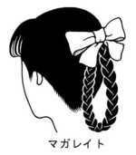

| [今野緒雪] マリア様がみてる31 | |
| 今野緒雪 | |
| (2015) | |
|
マリア様がみてる
マーガレットにリボン
今野緒雪
|
もくじ
マーガレットにリボン─Ⅰ
デビュー
マーガレットにリボン─Ⅱ
ライバルがいいの
マーガレットにリボン─Ⅲ
フィレンツェ煎餅を買いに
マーガレットにリボン─Ⅳ
「さん」付け問題
マーガレットにリボン─Ⅴ
僕の兄妹
マーガレットにリボン─Ⅵ
ユミちゃん絵日記・未来編①
マーガレットにリボン─Ⅶ
ユミちゃん絵日記・未来編②
マーガレットにリボン─Ⅷ
青い傘の思い出
マーガレットにリボン─Ⅸ
あとがき
「ごきげんよう」
「ごきげんよう」
さわやかな朝の挨拶が、澄みきった青空にこだまする。
マリア様のお庭に集う乙女たちが、今日も天使のような無垢な笑顔で、背の高い門をくぐり抜けていく。
汚れを知らない心身を包むのは、深い色の制服。
スカートのプリーツは乱さないように、白いセーラーカラーは 翻らせないように、ゆっくりと歩くのがここでのたしなみ。もちろん、遅刻ギリギリで走り去るなどといった、はしたない生徒など存在していようはずもない。
私立リリアン女学園。
明治三十四年創立のこの学園は、もとは華族の令嬢のためにつくられたという、伝統あるカトリック系お嬢さま学校である。
東京都下。武蔵野の面影を未だに残している緑の多いこの地区で、神に見守られ、幼稚舎から大学までの一貫教育が受けられる乙女の園。
時代は移り変わり、元号が明治から三回も改まった平成の今日でさえ、十八年通い続ければ温室育ちの純粋培養お嬢さまが箱入りで出荷される、という仕組みが未だ残っている貴重な学園である。
【マーガレット】
キク科の多年草。
カナリア諸島原産。主に観賞用に栽培される。
花言葉はいっぱいある。
花占い。
誠実。
──それから、真実の友情。
マーガレットにリボン─Ⅰ
「これ、マーガレット？」
部屋に入ってくるなり、志摩子さんが言った。
月曜日である。放課後である。薔薇の館の二階である。
前日の遊園地疲れもあって、六時間の授業は結構しんどかった。いやいや、遊んできて何言ってんだ。祐巳は、自分に突っ込みを入れた。
「そうだよね。この花、マーガレットに見えるよね？」
由乃さんがフフンと笑う。今朝教室で祐巳に会うなり、その手もとを見て同じように「これ、マーガレット？」と尋ねた人、なのだが。
「そう言うからには、違うのね」
志摩子さんは荷物を椅子の上に下ろしてから、たった今祐巳がガラスのコップに生けた「マーガレットそっくりさん」の花束に顔を近づけて匂いを嗅いだ。
「あ」
そして、おもむろに出した答えは──。
「春菊」
ピンポーン。
「すごい、志摩子さん。よくわかったね」
由乃さんが、正解者にちょっぴり尊敬の眼差しを向けた。
「瞳子ちゃんも乃梨子ちゃんも、当てられなかったよ」
お茶をいれていた一年生二人は、自分たちの名前が出たので一瞬振り返ったけれど、すぐに仕事を再開した。
「だって、春菊の匂いがしたもの。......そう、すき焼きを思い出したわ」
なるほど。春菊といえば、まず思い出すのはすき焼きかもしれない。ちょっと匂いが強い、大人の味。
「志摩子さん、春菊好き？」
「ええ」
「やっぱり」
志摩子さんってば、若いくせにギンナンとかクワイとか百合根とか、食の趣味が大人、というか渋いのだった。祐巳のお姉さまである、小笠原祥子さまとは真逆をいく。
「それで、どうしたの？ この春菊の花は」
志摩子さんが尋ねた。
「祐巳さんがおうちから持ってきたの」
祐巳より前に、由乃さんが横から答える。だから最後まで説明してくれると思いきや、言いたい部分だけしゃべって後は「ね？」なんて、さっさとバトンタッチしちゃうからずるい。仕方なく、祐巳は続きを引き受けた。
「母がベランダで栽培していてね。やわらかいところを摘んで、時々お鍋に入れていたんだけど三月に入って、近頃我が家ではお鍋が遠のいていたわけ」
それで放ったらかしにしているうちに育ち過ぎて、花まで咲いてしまった。一般的には、五月とか六月とかもっと先に咲くものらしいけれど、何ぶん日当たりがいいんだ。うちのベランダ。
「さっきまで教室に飾ってたんだけど、薔薇の館にも、と思って三分の一くらい花瓶から抜いてきた」
「ああ、そうなの」
納得、と志摩子さんがほほえんだ。
この部屋には、三年生を送る会で余った薔薇が花瓶の中でまだぴんぴんしていたけれど、マーガレット、もとい春菊もまた違った趣きで素敵だから。
花はいくらあってもいい。飾ってあると、部屋が華やぐものだ。
それにしても、見れば見るほどマーガレットに似ている。違いといったら、パッと見、白というより黄色っぽい印象があるところだろうか。それは、マーガレットならば全体的に白い花びらであるのに対し、春菊は花の根元が黄色く色づいているせいだ。
「マーガレットは木春菊と呼ばれているから、似ていて当然かもしれないわね」
志摩子さんのつぶやきに、祐巳と由乃さんは「へー、そうなんだ」「さすが志摩子さん、博識だね」と感心しきり。他にも、「木立カミツレ」なんて異名もあるらしい。知らなかった。
「さて」
そんな誰かの一言をきっかけに、祐巳と由乃さんと志摩子さんは着席した。
「始めますか」
そして、おもむろに自分の荷物を探って、家から持参した品をテーブルの真ん中に置く。
並べられたのは、Ｂ５版サイズの雑誌一冊、キャラクターの描かれたビニールの小袋に入ったキャンディーが七袋、そして色とりどりのリボンが数本。
それらを眺めながら、三人は「ふーっ」とため息をついた。
「何か、パッとしないというか」
「やっぱり？」
「私も、もっといいアイディアが、どこかに眠っていそうな気がする」
それで、「始めますか」が始められない。ぐずぐずしていると、乃梨子ちゃんと瞳子がお茶を持ってきて、それぞれ三人の前に置いた。
お茶は、三つ。一年生二人は席にはつかず、そのまま二年生三人にお伺いをたてた。
「他に、何かご用は」
「ないわ。ありがとう」
「では、私たちはお先に失礼させていただいてもよろしいですか」
「うん。ご苦労さま」
二人はごきげんようと挨拶してから、静かに扉を開閉して出ていった。
「気が利くよね」
お茶を飲みながら、由乃さんが言った。
「聞き分けもいい、っていうかさ」
瞳子と乃梨子ちゃんのお姉さまであるところの、祐巳と志摩子さんは、妹を誉められて、照れくさくも誇らしい気持ちでふふっと笑った。
「私だったら、私の前でお姉さまが自分以外の下級生にプレゼントをあげる相談なんかしていたら、キーってなっちゃうけれど」
そうなのである。
ここに次期薔薇さま三人が雁首揃えているのは、別に定例会議とか臨時会議とか山百合会の仕事に関わる作業とかではまったくなくて、ごくごく個人的な用向きだった。
もうすぐホワイトデー。身内以外からもらった、バレンタインデーのチョコのお返しについての話し合いをしているのだ。話し合いも、今回で第三回になる。
第一回目は、先週だっただろうか、廊下での立ち話だった。
「姉妹以外からもらった？」に始まり、「お返し、どうする？」「あまり三人で差が出るの、まずくない？」ということになり、「じゃ、何か一緒に買いにいこう」と話がまとまった。
第二回目は、昨日の遊園地で。
花火を見終わって、さてそろそろと帰り支度し始めた時、「どうせだったら、ここでクッキーかキャンディーを買っていかない？」と突然ひらめき、お土産ショップに舞い戻って、それぞれ自分がお返しする個数を購入した。
で、三回目の本日。
買ったそのままを渡すのは味気ないから、せめてラッピングなりは自分たちの手で、と、家にあったリボンを持参して集合したというわけなのである。あいにく、おニューの包装紙はどこのうちにもなかったから、それも含めてどうにかしないとならないのだが。何となくパッとしないのだ。
「別にいたっていいのに、あの子たち私たちの邪魔にならないように席外してさ」
まだ、一年生のこと言っている。やっぱり、由乃さんは妹がうらやましいんだろうか。
「優秀だよね」
わかった。
キャンディーのラッピングについていい案が浮かばないので、つい別の話題に逃げているんだ、由乃さん。雑誌をパラパラめくりながら、しみじみつぶやく。
「あれは、二人とも水野蓉子さまみたいな上級生になるよ」
大学進学を機に、自分のキャラクターを変えてみようと思った。
別に、今までの自分が嫌いだったとか、生きにくかったりしたからではない。
ただ、何となく。
ちょっと飽きたのかもしれない。
思えば、親と離れて社会と関わりをもった幼稚園から、ずいぶん長いこと「世話好き」「優等生」という役を演じてきた気がする。このキャラクターとのつき合いは、幼稚園の頃からだからかれこれ十二、三年になろうか。この身にはかなりフィットしているのだが、如何せん長すぎる。
人生、何度か自分のキャラクターを修正、あるいは全面変更できる機会が訪れるものだ。たとえば、引っ越しにともなう転校とか、進学とか就職とか。今までの自分を知らない人々ばかりの環境で新生活をスタートする事になった時、それがチャンスだ。
だが、私はそれをモノにできずに高校を卒業してしまった。
小学校入学の時は、幼すぎて、キャラを変えるなんて考えは浮かばなかった。
受験で私立中学に入った時は、同じ小学校だった同級生はほとんどいなかったので、キャラを変える絶好のチャンスだったわけだが、後に親友となる鳥居江利子に推挙されてクラス委員を引き受けることとなり、出鼻をくじかれた。今考えれば、「人の面倒をみるのが苦手なクラス委員」や、「おちゃらけたクラス委員」がいたってよかったのに。クラス委員とはクラスのまとめ役でなければならないという思いこみで、自らの行動に規制をかけてしまったのだ。しかし、それまで一面識もなかった江利子が、どうして私のキャラを見抜けたのかは未だに謎である。
高校は中学からの持ち上がりだったので、周りには知った顔がぞろぞろいた。そんな所で突然キャラを変えた日には、「蓉子さんがおかしい」と保健室に連れていかれてしまうのがオチだ。
というわけで、私は心機一転、新たにできる大学の友人たちには、別の私を見せることにしたのだ。
とはいえ、何もないところからキャラを作り出すのは容易なことではない。そこで、身近にいた人間たちをサンプルにして、その真似からスタートすることにした。一人じゃ個性が強すぎるので、二人くらいをミックスする。
親友佐藤聖の力の抜け具合、それから可愛い妹、福沢祐巳ちゃんの親しみやすいところ。
けれど、思ったようにはうまくいかない。
「あの、水野さん」
昼休み、学食で日替わりＢ定食を食べていたら、クラスメイトが二人近づいてきた。
「一限の数学出た？」
その辺にいる免疫のない男子学生なら、「こいつら、俺のこと好きなんだ」と勘違いするかもしれない。でも、そんな風に可愛らしく手を合わせられても、私にはまったく効果がなかった。
「出たけれど？」
こちとら中高合わせて六年間の女子校育ち。この後彼女たちが何を言い出すのか、だいたいの見当はつくのだ。
「悪いんだけれど、ノート写させてくれないかな」
ほら、きた。
「......いいけれど」
私は箸を置いて、大きめのショルダーバッグからノートを出して渡す。遅まきながら、笑顔を添えることも忘れない。親しみやすさ、親しみやすさ、と。
「わー、助かった。昼休みが終わるまでに写して教室で返すね」
彼女たちはバタバタと学食を去っていく。私は時計を見た。昼休みが終わるまで、あと十五分。
その一限目の数学っていうのはくせ者で、寝ぼけ眼で出てきた学生の目が覚めるような密度の濃い授業で、図形を含む計算式がノート四ページ分。どう考えても、時間内に二人が書き写すのは不可能だ。
（当然、コピーか）
何だかな、とため息が出る。次の数学の授業まで貸すから、せめて自分でノートに書いたらどうなのか。あんなに念入りにお化粧する時間があるのなら、すっぴんのまま授業に出ろよ。
（やだやだ）
嫌なのは、そんなことをうじうじ考えている自分だ。
嫌なら、ノートを貸さなければいい。貸したのなら、文句を言うな。せっかくキャラを変えようとしているのに。真面目な優等生のままでどうするのだ。
そもそもお手本であるはずの聖なら、貸す方ではなくて借りる方だろう。
（借りる......？）
だめだ。無意味に授業をサボるなんて、かえってストレスになる。私は、食べかけのもずく酢を箸でかき混ぜた。
「水野さん」
名前を呼ばれて顔を上げると、今度は別のクラスメイトが前の席に座っていた。
「一限の数学出てましたよね」
「あ、ノートだったら今──」
そこまで言って、思い出す。彼女もまた、一限目あの教室にいた。
「うん。出てた。だから、ノートはコピーしなくていいです」
短いフワフワの髪の毛、化粧っけのない顔に黒いフレームの眼鏡。見た目は全然違うけれど、何となく印象としては祐巳ちゃんみたいな子だ。
「水野さんもいつも出てるでしょう。全部の授業。出席とらないのも、一限も、五限も、皆勤賞」
皆勤賞っていってもまだ五月だよ、と心の中でつぶやきながら、一つの答えにたどり着いた。
「それを知っているってことは」
この子も皆勤賞ということだ。確か、川藤さんといったっけ。ニッコリ笑って言った。
「そう。真面目だけが取り柄です」
川藤さんは、指を折った。
「あと、日村さんと徳永さん。それで、真面目な四人で親交を深めませんか」
残り二人も女子である。確か皆勤賞なら男子もいたような気がしたが、女四人の中に男一人ではかえって気の毒、と今のところ誘わないつもりだという。
「......いいけど？」
答えながら、私は思い出していた。日村さんと徳永さんってどんな人だっけ。
そうそう。日村さんはあともう少しでアフロといっていいくらいの、芸術的なヘアスタイルで、化粧法もファッションも過激な、外見はすごく目を引くのにボソボソと小声でしゃべる人。徳永さんは、いつも男物のシャツとジーパンというラフな格好をしている。化粧もしないし、少年みたいな顔つきなんだけれど、長めの髪の毛を一本に結んでいる点と、細いのに意外に胸が大きいことから、男性と間違えられることはない。
「よかった。急ですけれど、今日はいかが？ 三限目で終わりでしょ。終わったら駅前の喫茶店で」
川藤さんは、『カフェ モウル２』という店の名前を告げたが、あいにく私は知らなかった。
「後で簡単な地図を描いてあげるわね」
「それは、どうも」
授業終わりで川藤さんと一緒に行けばいい話だと思ったが、現地集合らしい。
「真面目なグループということで、お酒は入りません。お酒は二十歳になってから。法律を学ぶ私たちが法律を守らなくてどうする、です。あ、水野さんはもしかして法律違反にならないお歳でした？」
「いいえ。現役なので」
「そうなの。落ち着いているから、年上かと思った」
落ち着いている、か。佐藤聖や福沢祐巳になれる日は遠いようだ。
「お店に予約しておくから」
「あ、何だか任せちゃってごめん」
高校時代だったら、何か手伝いましょうかと申し出るところだったが、ぐっと堪えた。
「いいの、いいの。私、こういうの慣れているから」
「こういうの？」
「委員とか幹事とか。何だか、いつもそういう役が回って来ちゃうの」
川藤さんは、どうやら私のお仲間のようだ。
「じゃ、私はこれで。日村さんと徳永さんにも言いにいかなくちゃ」
「あ......」
あと十分もしたら、教室で会えるのだから探しに行く必要はないのではないか、そう言いかけた時には川藤さんの姿はなかった。真面目な日村さんと徳永さんなら、次の授業を休むことはない。たぶん。
駅前の『カフェ モウル２』は地下にあった。花屋の下、石段を一階分下りてすぐある扉にモグラの飾りが施されている。授業終わりで集まった四人は、さっそく店に入った。だが。
「えっ？」
席は満席だった。三時というお茶の時間に合わせて、マダムたちがケーキセットを突きつつ、優雅におしゃべりに興じている。『カフェモウル２』は、四人がけのテーブルが十ほどの店だった。
「だって、予約しておいたでしょ」
川藤さんは必死になって訴えた。
「カワトウさん、カワトウさん......。あった。五時から四名になってますけれど」
男性アルバイターが、メモを見ながら言った。
「五時じゃなくて、十五時。三時って言ったんですよ」
十五時と五時。電話では聞き取りにくかったのかもしれない。初歩的でありがちなミスである。どちらかがもう一度声に出して確認していたら、──なんて、今更言っても詮無いこと。
「五時じゃ......ね」
「私、夕方から家庭教師のバイトが入っているから」
日村さんと徳永さんは、日を改めて、という雰囲気になっている。私はどちらでもいいと思ったが、川藤さんが今にも泣きそうなので、つい口を開いてしまった。
「でも、五時まで待たなくても、そのうち席は空くと思うけれど。ここは完全予約制のお店じゃないんでしょ」
幸い、順番待ちをしている客はいない。十席が十席、一時間二時間と長居するとは考えにくい。すでに、ケーキを食べ終わっている客もいるわけだし。
「せっかくだから、少し待ってみない？ 徳永さんは、何時にここを出ればいいの？」
「五時かな。......わかった。もうちょっとだけつき合うわよ」
徳永さんがそう言うと、日村さんも「ええ」と小さくうなずいた。
「ありがとう」
私は、それからさっきのアルバイターに言った。
「すみません。先にメニュー見せていただいていいですか」
限りある時間の有効活用のつもりだったが、やり過ぎだったかもしれない。私が言わなくても、川藤さんがきっと頼んだはずだった。
読みは当たり、十分と待たずに私たちは席へと案内された。メニューをもらっていたので注文もスムーズに済ませ結果的に時間のロスはさほどのものではなかったし、店長から「お詫び」としてクッキーのサービスもあったので、あの時帰らなくてよかったという話になった。
「私の分、持って帰っていいかな」
徳永さんは紙ナプキンを広げて、クッキーを三枚包んだ。
ケーキセットを頼むくらいだから、甘い物が苦手というわけではなさそうだ。そもそも苦手ならば、お土産にせずに「皆さんで食べて」と手をつけないだろうし。
「生徒と食べるの？」
私は聞いてみた。もしそうなら、私の分も持たせてもいいと思ったので。
「生徒？」
徳永さんは、聞き返した。
「これから家庭教師に行くんでしょ？」
「あ、うん。そう。水野さんたら、よく覚えていたこと」
何だか、歯切れがあまりよくない受け答えだった。これは深入りしない方が正解かもしれない。──と、思ったのに。
「家庭教師って何教えているの。生徒はいくつ？男子？女子？」
川藤さんは俄然興味を示して、質問攻めにする。将来何になりたいのか知らないが、弁護士だろうが検事だろうが、この調子で法廷でも捲したてるのかと思うと、想像疲れした。
「まあ、いいじゃない。私のことは」
被告人もとい徳永さんは、やんわりと証言を拒否した。
「私！」
突然、日村さんが言った。黙っているか、小さくボソボソしゃべるかしか印象がなかったので、ちょっと大きめの声が発せられた時、最初はそれが日村さんの口から出たなんて信じられなかった。
「私、訛ってますかっ」
「え？」
残り三人は顔を見合わせた。会話が途切れて、お陰で店内に流れていた曲がクラシックだったことに気づいた。
「訛る......？」
唐突にそんなことを言われても。だって今まで、聞こえるか聞こえないかの声しかキャッチしていなかったわけだし。
「自分では標準語のつもりなんですが、ネイティブの人には訛って聞こえるみたいで」
比較的長いセンテンスを耳にして、「そういえば」くらいに感じた。
「東北？」
「当たりです。やっぱりわかるんですね」
日村さんは秋田の出身だと言った。ボソボソしゃべるのは、発音にコンプレックスを持っているから、らしい。お祖母ちゃん子で、実家では方言全開でしゃべっているので、地元の高校でもクラスメイトたちに指摘されていたらしい。
「で、こっちに出てくる時、都会の学生にバカにされないようにって、友達が相談にのってくれて。取りあえずパーマはかけていけ、雑誌に載っていたファッションだったら間違いないだろう、ってこんな感じになっちゃって。でも、実際大学に通ってみると、みんな意外と地味だし。だからといって、すぐに髪型や格好を変えるのって不自然だし。しゃべるの怖くて、友達できないから、どうしたらいいか誰にも聞けないし」
一度しゃべり出したら加速がついたらしく、日村さんは一生懸命自分について語った。途中ペーパーナプキンで鼻をかんだので、私は「どうぞ」とバッグからポケットティッシュを出した。
「あー、話したらすっきりした」
「解決したの？」
「うん。今月親から仕送りが届いたら、美容院行ってくるわ。ファッションは、おいおい。言葉なんて、通じりゃいいんでしょうが」
その通りである。その真理にたどり着くまで、彼女は一ヶ月ほど回り道をしたわけだ。
「──というわけで、これからよろしく」
再デビューのイベントを終えた日村さんは、言葉通りすっきりした表情で笑った。うつむきがちにボソボソしゃべる彼女とは、同一人物と思えないほど魅力的だった。
「そろそろ私行くわ」
徳永さんが腰を上げた。まだ四時四十五分だったが、話が一段落したからだろう。盛り上がっている時には、退席しにくいものだ。
「えっと、私の分は」
伝票を見ながら財布を開く。『お会計はご一緒にお願いします』とレジの側に書かれていた。
「これって、内税表示かな」
独り言にも聞こえるつぶやきに、つい私は答えてしまう。
「あ、税別って書いてあったけれど」
「え、どこに？」
「メニューに小さく」
すると、残りの三人が不思議そうな顔をした。
「......よく気がついたね」
徳永さんがお金を少し多めにテーブルに置いたので、私は自分の財布から小銭を出してお釣りを渡した。
「水野さんって」
「え？」
「会計係とかやってた？」
手際がいいから、と日村さんが言った。
「......の手伝いみたいなことを、少し」
私は言葉を濁した。嘘ではない。高校三年の時、生徒会長を務めていたが、私以外にも二人いて、みんなで手分けして会計や書記の仕事をこなしていた。その下に妹と呼ばれる後輩もいて助けてくれたから、会計の仕事ばかりしていたわけではない。
「それじゃ、お先に」
徳永さんの背中に、川藤さんが手を振った。
「生徒さんによろしくねー」
「えっ」
扉を開けかけた徳永さんは、ギョッとして振り返った。
「知らない人からよろしくって言われたって、その生徒さん困るわよ」
私は川藤さんの手を押さえた。
「あ、そうか」
気にしないで行くようにと目で促したが、徳永さんは扉の前にいて、なかなか外に出ようとはしなかった。どうしたんだろうと私たちが考え始めた頃、急に引き返してきてテーブルの前で三人に尋ねた。
「私、どういう風に見える？」
「え？」
残り三人は顔を見合わせた。
「第一印象っていうか。どんな人なのかな、っていうやつ」
「どう、って」
唐突に言われても（今日は唐突大サービスデーだ）。
「ボーイッシュで、クールで、格好いい感じ」
「知的で、動じない、かな」
「男なんかに負けないぞ、って思ってる」
日村さんと私と川藤さんは、思いついた言葉を並べた。
「そうか。じゃ、成功しているんだ」
「何が？」
「いや、いい」
徳永さんはそう言って再び背中を向けたけれど、「何が？」に対して「いや、いい」という答えは適当とは思えない。
「プラス謎めいている」
徳永さんが閉めた扉の音に被って、日村さんがつぶやいた。私も、その意見に同感だった。
「どんな風に見えるか、っていうのと、どんな風に見られたいか、っていうのと、どんな風な人なのかっていうのは、全部一致するとは限らないよね」
川藤さんが、トロンとした目でつぶやいた。カップの中の冷めきったコーヒーを、スプーンでクルクルかき混ぜている。顔は、テーブルすれすれまで落ちていた。酔っているみたいに見えるけれど、法律違反はしないという宣言通り、彼女はアルコールを飲んでいない。ケーキのクリームに多少洋酒の香りがしていたが、あれで酔ったとしたらすごい。
「薄々気づいているとは思うけれど、私、あんまり人を取りまとめたり細々したりするの、得意じゃないんだ」
「慣れている、って言ってなかった？」
委員とか幹事とか。そういう役が回って来る、みたいなことを言っていた。
「あれは、私の親友のエピソード。美人なのにお洒落とかまったく興味なくて、いつでもみんなのリーダーで。私、彼女みたいになりたいな、っていつも見てた。近所だったから、小学校から高校までずっと同じ学校で、大学も一緒だと思っていたら、彼女、うちの大学は落ちちゃって。私はうちの大学しか受からなくて。心細かったけれど、神様がそろそろ離れなさいって言ってるのかな、って頭を切り換えて。でさ、何を血迷ったか、私、彼女になろうって思ったわけ。十二年見てきたんだから、真似することくらいできるって。でも、無理でした。私もリセットします」
はーい、と両手を上げて川藤さんは笑った。日村さんに影響されたのは、まず間違いない。
「でも」
私は言った。
「無理して変わることはないけれど、最初から無理だって諦めることもないんじゃない？」
なりたい自分に近い人をお手本にして、努力するのも悪くないと思ったのだ。
「水野さんって、先生みたいね」
日村さんが笑った。しまった。お説教モードになっていたか。
照明が落ちて、ＢＧＭがジャズになった。途端に店内の雰囲気が変わった。夕方からはお酒を出す店に変わるらしい。いつの間にか、マダムたちのグループは姿を消し、若者が一人二人とテーブルに座っているのに気がつく。
私たちもそろそろ出ようかという雰囲気になった時、扉が開いて客が入ってきた。
「あ、まだいた」
それはさっきお店を出ていった徳永さんで、私たちの姿を見つけると、ニコニコしながらテーブルまでやって来た。
「あ、あの」
私たちは、混乱した。家庭教師のアルバイトに行ったはずの徳永さんが現れたからではない。戻ってきた彼女には、小一時間程前にいなくなった時とは、明らかに違う部分があったからだ。
両手に一人ずつ、子供を連れている。推定三歳と一歳の男の子。
家庭教師をつけるには、やや早過ぎる年齢に見えた。いや、最近は赤ちゃんの頃から塾に通わせる親もいるというが──。
「バイトって、ベビーシッターだったの？」
川藤さんが尋ねた。すると徳永さんは首を横に振って、やや大きい方の男の子の顔の側に自分の顔をくっつけた。
「偽証罪になるのかしら。それとも、経歴詐称？」
笑っちゃうほど、瓜二つ。男の子の方は、キョトンとしている。
「徳永さんって、ママさんだったの!?」
「そう。実家がこの近くで、平日の日中はチビたちを母に見てもらっているの。旦那もいるんだけれど、普通の会社員だから、帰ってくるの夜だしさ。そういうの五つや六つ年下の学生たちに一々説明するの面倒くさいじゃない？だからバイトってことにしてたの」
「徳永さんって、そんなに年上だったの......いえ、だったんですか」
散々タメ口たたいていたのに、年上と知った途端敬語に直したって遅い。まあ、川藤さんの気持ちもわからないでもないけれど。徳永さんは二十四歳というが、とてもそうは見えない。
薄暗い店内が怖いのか、はたまた眠くなったのかわからないが、下の子がぐずり出したので、徳永さんは「じゃ、明日ね」と言って帰っていった。
誰も、どうして徳永さんが告白する気になったのかという疑問を、口にすることはなかった。
店を出ると、駅前の商店街は買い物をする人たちで賑わっていた。『カフェモウル２』の階上にある花屋は閑散としていたが、客がいない分、ガラスのウィンドゥごしに花たちがよく見えた。
「結局、水野さんだけね。最初から印象が一貫しているのは」
「え？」
川藤さんの言葉を、私は不思議に思って聞き返す。みんなが本来の自分の姿をさらけ出すに従って、私も聖モードが崩れて来ているとは薄々気づいてはいたのだが。
「水野さんって、高校の頃優等生だったでしょ。面倒見はいいし、リーダーシップあるし、気配りもできる、みんなのお姉さんタイプ」
「あー」
私は頭を抱えた。
私が努力して作り上げた新キャラクター、佐藤聖の無責任、佐藤聖のやる気のなさ、佐藤聖の調子の良さ、それに福沢祐巳の親しみやすさを加えたニュー水野蓉子は、まったく大学内では浸透していなかった、とそういうわけか。
「あの、もしかして最初からそんな風に見えてた？」
尋ねると、川藤さんも日村さんも思いきり「うん」とうなずいた。
「そうか......」
私は何となく、紅い薔薇を一本買って家路についた。
マーガレットにリボン─Ⅱ
由乃さんがめくっている雑誌は、『秋桜友達』の二月号だ。
バレンタインデーの特集記事の中に、ラッピングのコーナーがあったので「参考になるかと思って」と由乃さん自身が持ってきた。といっても、本当の持ち主は、由乃さんのお姉さまである令さまのようだけれど。
「ふうむ」
ラッピングのコーナーは、見開き二ページだったからすぐに見終わってしまった。ハート型の箱の包み方とか、上にお花が乗っているみたいに包む方法とか、包装紙が足りなくなった時の対処法とか、勉強になることがたくさん書いてあったけれど、見ていて「これよ、これこれ」と食いつきたくなるものがない。
つまり、三人が物足りないと感じている「何か」は、ラッピングでは解決できない類のものなのかもしれない。
由乃さんの指は、連載小説やコスモス文庫の新刊案内のページを器用にすっ飛ばす。そして『二月・三月のケーキ』を経由し、『コットンクラブ手作りしてみよう』のコーナーにたどり着いた。そのページは、手作りの雑貨とその作り方が載っている。
「いっそ、こういう物をキャンディーに添える？」
横からページを見ていた志摩子さんが、つぶやいた。それは祐巳も考えていたことだったから、思わず「うん」とうなずいてしまったのだが、それらがその返事に比例して簡単に作れるものとは限らない。
「令ちゃんなら、こんなのチョチョイノチョイだろうけれど」
由乃さんも、腕組みをして「うーん」とうなった。たぶん、問題は三人の技術と制作にかかる時間の確保であろう。
でも、いいな。キャンディーを可愛くラッピングするのも悪くないけれど、ラッピングは所詮ラッピングであって、包装を開いた時点で役目は終わる。
けれど手作り小物だったら、気に入ってさえくれれば、末永く使ってもらえるんじゃないかな、──なんて思うのだ。
「簡単な物なら、出来るのではないかしら」
最初の方に載っているイラストを指さしながら、志摩子さんが言った。その周辺に紹介されているのは、初心者マークがついた小物たちばかりだ。
「でもさ。私と志摩子さんは二つだけれど、由乃さんは三つだからね」
いくら簡単でも、数を作らなければならないのだから大変だ。
「そうなのよ」
困ったわ、という口調なのに笑いを噛み殺すような表情の由乃さん。バレンタインデーの日にもらったチョコレートの数が、二人より一個多かったのがちょっと嬉しかったらしい。
「まあ、志摩子さんには乃梨子ちゃんがいるからみんな遠慮したんでしょうし、祐巳さんは祥子さまの妹だからチョコを受け取らない主義だと思われたのかもしれないわね」
なんて、謙遜だか何だかわからない分析をしてみせた。
「まあ、令ちゃんの紙袋ぎっしり一杯分に比べたら、三個なんて可愛い、可愛い」
どうやら、ちょっとじゃなくてチョコレートを三つもらったことが相当嬉しかったようだ。
「令さま、といえば。今年はお返しどうするって？」
参考までに、と話を振ってみる。確か去年は、クッキーか何かを全員にお返ししたんじゃなかったっけ。
「それがさ」
聞いてよ、と雑誌を閉じて身を乗り出す由乃さん。
「チョコの贈り主たちがさ、『今年は卒業式やら何やらでお忙しそうですから、お返しいりません』なんて殊勝なこと言っちゃって。でも、相手は令ちゃんだよ？それはどうも、なんて放っぽっておけるわけないじゃないの」
なるほど。
「それで？」
「せっかくの申し出を無にしてしまっては申し訳ないから、ホワイトデーにはお返しをしないで、春休みになったらお礼状を出すことにしたんだって」
チョコレートの包みやカードには住所なんて書かれていないから、それを調べることからして大変なのに、と由乃さんはぼやいた。確かに、クラスと名前だけを書いてポストに投函するわけにはいかない。
「令さまらしいわ」
「凝りに凝った手作りカードとか作るに決まっている。ホント、バカなんだから」
そう。
バカかどうかはさておき、令さまとはそういう人である。今年のバレンタインデーも、受験に重なって当日に手作りチョコを作れなかったからって、代わりに手作りカードを由乃さんに渡していた。
「あれ、もう使ったの？ 何だっけ、ほら、えっと『バレンタインチョコ・リクエスト受け付け券』？」
祐巳が尋ねると、由乃さんはつまらなそうに答えた。
「これから。考えてはいるんだけれどね」
「もう決めているの？」
今度は、志摩子さんが質問した。すると返ってきた答えはというと。
「トリュフ」
「え？」
「だから、トリュフよ。令ちゃん特製の、手作りトリュフチョコレート」
「トリュフチョコレート？」
志摩子さんと祐巳は、思わず顔を見合わせた。トリュフとは、また控えめな。好きにリクエストしていいのだったら、もっと大きかったり派手だったりしてもよさそうなのに。遠慮はいらない。玄人裸足の腕をもつ令さまなら、大概のリクエストにお応えできちゃうはずである。
「一昨年だったか、江利子さまにあげてたのよ。どんなにおいしかったのか、味見したいと思っていたの」
「......ああ」
出ました、由乃さんの永遠のライバル江利子さま。
昨春リリアン女学園高等部を優秀な成績でご卒業なさった鳥居江利子さまは、由乃さんのお姉さまのお姉さまで、二人の関係はいわゆる「お祖母ちゃん」と「孫」なわけである。
一般的には、無責任に可愛がり可愛がられる関係だが、ここは令さまを挟んで競い合っている。武蔵と小次郎なのだ。
「いまだに、張り合っているんだ」
「そりゃね」
由乃さんはしみじみ言った。
「江利子さまには、いろいろ思うところがありますわよ」
「山辺亜紀です」
父親に名前を言いなさいと言われた少女は、はっきりとした口調で自己紹介した。
「てんとう虫幼稚園のすみれ組です。六歳です」
まあ、お育ちのよさそうなお嬢ちゃんだこと。また、しゃべり方も利発そうだ。
「鳥居江利子です。美大に通っています。今、一年生です」
私は、一旦そこで切り上げようと思ったが、相手が年齢を言ったのにこちらが言わないのは、女性としてフェアでないように思えて、「十九歳です」とつけ加えた。
「お父さんのお友達だよ」
この子の父親である山辺さんが、自分と私との関係を説明する。
お友達。
確かに、まだお友達だ。
「よろしく。亜紀ちゃん」
お友達以上でも以下でもない。知り合って半年になるけれど、キスどころか手をつないだことさえない。
私は一度この人にプロポーズして断られ、お友達ということでよろしければ、という前置き付きでつき合ってもらっている。
ここだけの話、つき合っていると言っていいのかどうかも謎なのである。
山辺さんには子供がいるし、私も忙しい大学に通っているから仕方ないのだけれど。デートといえば、お互いにちょっと時間が空いた平日に動物園に行って象を眺めたり、窓の外に建設中の高層ビルが見える喫茶店でお茶を飲んだり。私は彼の横顔を見ていられれば幸せだから、別に不満に思ったりしないのだけれど、大学の同級生たちのする自分の彼氏や彼女ののろけ話を聞くにつけ、あまりの違いに不安になる。私たち、一生このままなんじゃないかしら。
そう思っていた矢先だ、「娘に会ってくれ」が舞い込んできた。
友達から恋人へのステップアップ。いや、一足飛びに新しいママ候補となるのか。娘さんは、私のことをどう思っているだろう。やっぱり、反対されたりするのだろうか。
たっぷり悩んで、ため息をついて、後輩に八つ当たりして、友達に愚痴を言って、そうして今日の日を迎えることになりました。
十月の晴れた日曜日の午後、駅からちょっと離れた喫茶店は程よくお客さんが入っていた。
「仲よくしましょう」
私の言葉に、亜紀ちゃんは下を向いた。これは「うん」のうなずきか、それとも目をそらしただけか、この子のことをあまり知らない私には判断がつきかねた。こっちが悩んでいるのに、もう機嫌よくプリン食べてるし。
「江利子さんに、何かお話はないのか」
山辺さんが、娘に声をかける。まるで、母と妻の板挟みになる夫だ。知っていたけれど、本当に不器用な人だ。気まずい沈黙をどうにかしたいのはわかるけれど、幼稚園生の娘に話題を振ってもらおうとしてどうする。仕方ない、ここは私が何か面白話でも提供して──。と思ったら、亜紀ちゃんが私に向かって一言いった。
「もう帰っていいですか」
いきなりパンチを食らった気がしたね。そうですか、もう帰りたいんですね。私と会っていたって、時間の無駄というわけですね。そんな言葉が頭の中でグルグル回って、もう、何も言い返せなかった。
「亜紀、何てことを」
うろたえる山辺さん。
「お父さんは亜紀に、お父さんのお友達と会ってって言ったでしょ。もう会ったから、いいじゃない」
これだから頭のいい子は。理屈ではそうだろうが、大人の世界では言葉の裏にいろいろな意味が含まれていることもあるわけで。
「亜紀にとってはそうかもしれないけど、お父さんは江利子さんとまだお話があるんだ。ここから亜紀一人で帰るわけにはいかないだろう。だから」
理屈には理屈返し。山辺さんは時間を引き延ばす作戦に出た。
そりゃそうだ。これは事実上「お見合い」であって、会ってわずか二十分ほどでおひらきなんて、たぶん私に申し訳なくてできないのだ。
「来れば？」
亜紀ちゃんは、私をチラッと見た。
「え？」
「お話があるなら、江利子さんも家に来ればいいじゃない」
私と山辺さんは、思わず顔を見合わせた。
謎だ。
亜紀ちゃんが笑顔だったら、まだわかる。素敵なお姉さんと別れがたくて、一緒に家まで来て欲しい、とかね。しかし、誘っている割には、私のことを歓迎しているようにはまったく見えないのだ。
「亜紀ちゃん、あのね。お家に呼んでくれるのは嬉しいけれど、急にお邪魔するのは──」
幼稚園のお友達じゃないんだから、「来れば？」と言われてホイホイついていくわけにはいかないだろう。大人には大人の──、と思ったら山辺さんが手を叩いた。
「いや、いいじゃないですか」
「ええっ」
「掃除も行き届いていない家ですが、江利子さんさえ嫌じゃなければ、是非いらしてください」
「はあ」
ここで断れば「嫌」ということになってしまう。山辺さんの家に行く。彼の生活に触れる。嫌なわけはない。ものすごく興味がある。
「それじゃ、少しだけ」
私はうなずいて、伝票を取ってレジに歩き出す山辺さんを追いかけた。亜紀ちゃんはすでに店の外に出ている。
さて、余所さまのお宅を訪問するのに、手土産なしというわけにはいかない。山辺親子がキップを買っている間に、私は駅前のお菓子屋に入ってクッキーを買った。デパ地下なら種類がもっとあって選べただろうけれど、急いでいたので仕方ない。
駅のホームに着くと程なくやって来た下りの普通列車に乗って、二つ目の駅で下車した。
電車の中で、亜紀ちゃんはおとなしかった。山辺さんを私から引き離そうとかそんな様子もなく、ただ一人でシートに腰掛けてうつむいていた。
「本当にお邪魔してもいいんでしょうか」
一度だけ、隣で吊革につかまる山辺さんに確認してみた。
「気にしないで。それより、僕は亜紀が君を誘ったことに興味がある」
私も、その件については大いに関心があった。
駅から十分ほど歩いた所に、山辺さんの家はある。集合住宅かと思ったら、古い平屋の一軒家だった。
「亜紀、走っちゃ駄目だよ」
もうすぐ家というところで、亜紀ちゃんは走り出した。それほど家に帰りたかったのかと思うと心中複雑だったが、取りあえず拒絶されなかっただけでもよしとした。
「鍵は？」
「亜紀も持っている」
なるほど、小さな後ろ姿が慣れた手つきで差し込んだ鍵を回して、横開きの扉をガラガラと開けた。
「ただいまー、お母さん」
中に向かって叫ぶ声を聞いて、私はドキッとした。
「家に入る時は、誰もいなくてもそう言って入るようにさせているんだ」
「そ、そう」
家の中に一人でいると思われないために、それは必要な儀式なのだろう。けれど、私の心は乱れた。
「そんな顔をしなくても、大丈夫だよ。一人で留守番させることは滅多にない。十軒先に、彼女の祖父母が住んでいるから」
山辺さんが家を空ける日中は、亜紀ちゃんを預かってくれたり、ここに来てくれたりするという。山辺さんは、私が亜紀ちゃんの発した「お母さん」という単語について、何も感じていないと思っているのだろうか。
取りあえず私が「ただいま、お母さん」と言うのは適当ではないので、「お邪魔します」と一礼してから靴を脱いだ。
「好きな所に座って」
私は、リビングというよりお茶の間といった方がピッタリの六畳間に通された。真ん中にちゃぶ台。それを囲む座布団。茶箪笥、テレビ......。
掃除が行き届いていないと言っていたが、小綺麗に暮らしている。ポットなんてピカピカだ。山辺さんがやっているのか、お祖母ちゃんの手柄なのか。
山辺さんは、キッチン、いや台所でお湯を沸かしている。好きな所に座るように言われたけれど、こういうのってたぶんその家族の指定席みたいなものがありそうなので、遠慮して座布団のない、畳に直に膝をついた。
亜紀ちゃんはどこに行ったのだろう、と思っていたら、やがて茶の間に現れた。
「お手々洗って、うがいしてきた。ついでにおしっこ」
──だそうだ。その時何となく私は、「あれ？」って思った。あれ、もしかして、って。
「亜紀ちゃん、お土産のお菓子どうしようか」
今食べるか、という意味で聞いたのだが、亜紀ちゃんはその場で正座をして頭を下げて「ありがとうございます」と箱を受け取った。思わず、こっちも背筋を正してから「どうぞ」なんてかしこまってしまった。
堅苦しいやり取りが一段落すると、亜紀ちゃんは箱を持ったまますぐに立ち上がった。どうするのかなと見ていたら、振り返って私に手招きをする。来いという仕草なわけだから、ついていってみる。すると、襖を開けて隣の部屋に案内された。
「──」
そこには仏壇があった。亜紀ちゃんは仏壇の扉を開けてから、その前にお菓子の箱をお供えした。チンチンとおりんを鳴らし、目を閉じて手を合わせる。
「亜紀ちゃん。私、お母さんにお線香あげていいかな」
亜紀ちゃんが仏壇の前から離れたので、私は聞いてみた。すると、亜紀ちゃんは異様なモノでも見るみたいに、私のことを見て、それから小さい声で言った。
「大人がいる時しか火をつけたらいけない、って」
「じゃあ、お父さんに聞いてみて。江利子さんが蝋燭に火をつけていいかって」
私の言葉に、亜紀ちゃんはうなずいて台所へと駆けていった。私は自分では大人だと思っているけれど、亜紀ちゃんの目から見たら大人か子供か判断に迷うのかもしれない。
「火をつけてもいいって言った」
やがてそんな言葉とともに亜紀ちゃんが戻ってきたので、私はマッチで蝋燭に火をつけた。それから亜紀ちゃんと一緒に仏壇にお線香をあげて、手を合わせた。
「江利子さんって、変わってるね」
立ち上がって、亜紀ちゃんが言った。「どこが？」と聞き返すより前に、その答えはやってきた。
「亜紀のお友達、みんなお仏壇が怖いって言うよ」
「そう？」
私はその場では何となく受け流したけれど、蝋燭の火を消しながら、亜紀ちゃんが仏間に私を連れてきた理由がわかった気がした。
三人でお茶を飲みながら私の買ってきたクッキーを食べると、亜紀ちゃんは今度は私を自分の部屋に連れていった。
「きっと、若い女の人が家に来てくれて嬉しいんだよ」
二人を見送る山辺さんは、楽観的に笑っている。本当に、この人は女心をわかっていない。
「これ、亜紀が生まれてすぐの写真」
こうしてアルバムを見せながら、私の反応を見ているのだ。亜紀ちゃんのお母さんと山辺さんが、亜紀ちゃんを囲んで笑っている。幸せな家族写真。
まったく平気というわけじゃないけれど、傷つくほどのことはない。これは過去、山辺さんが幸せだったという記録だ。そんなことより、私の前で「お母さん」の話題を出す亜紀ちゃんに切なさを感じた。彼女は、自分のお母さんが一番だと強調している。私がその座に取って代わることを、本能的に恐れているのだ。
だから亜紀ちゃんは自分に有利なホームグラウンドに私を招き入れ、一戦を繰り広げることにした。喫茶店では借りてきた猫のようだったのに、今は別人のようにいきいきしてよくしゃべった。
「亜紀って名前はね。お母さんがつけてくれたんだよ」
自由画帳を開いて、赤のクレヨンで「亜紀」と大きく書いて私に見せる。
「そうなの」
「お父さんはジュラってつけようとしたんだって」
「ジュラって、ジュラ紀のジュラ？」
恐竜好きの山辺さんとつきあい始めて、私もちょっとはそういう単語にも慣れ親しんできた。
「お母さんが反対したの」
山辺ジュラ。もしかしたら、目の前の女の子はそんな名前だったのかもしれない。それはそれで可愛い気もするが、奥さんは反対だったわけだ。それで代案として亜紀という名を出した、と。
「あ、わかった」
私はひらめいた。
「亜紀ちゃんの亜紀って、白亜紀からとったんでしょ」
「うん」
「いい名前だねー」
素直に誉めると、亜紀ちゃんは一瞬だけ仏頂面を崩して笑った。顔も可愛いけれど、チラリと見せた心の内が、私のハートを鷲づかみにした。
「ねえ、亜紀ちゃん。亜紀ちゃんが嫌なら、もう私と会わなくていいよ。ただ、お父さんとはお友達だから、時々会ってお話ししたいんだ」
私は、たとえ亜紀ちゃんに山辺さんとの交際を反対されても、陰でコソコソ会うのは嫌だった。だから、ちゃんと宣言する。別れるつもりも毛頭ない。
「お父さんとは、お友達？」
不思議そうに、亜紀ちゃんが問う。
「そうよ」
「じゃ、キスしたことない？」
「ない」
嘘偽りない事実だから、真っ直ぐ目を見て言えた。私は心からよかったと思った。もしや、この瞬間のためだけに、私たちは半年間キスをしなかったのではないだろうか。
「結婚しないの？」
「私はしたいと思ってるけど」
私は正直に告白した。
「亜紀ちゃんのお父さんはどうかな」
「亜紀、わかんない」
「そうだよね」
山辺さんの気持ちを推理してもらえるなんて、端から期待していない。でも、亜紀ちゃんは誠実だ。六歳という年齢なら、お父さんは江利子さんのことを好きじゃないと、言ってもいいところなのにそれをしない。私が子供相手にバカ正直に打ち明け話をしているから、引きずられているのかもしれないけれど。
「亜紀ちゃんと私はお友達になれないのかな」
「お友達？」
亜紀ちゃんは顔をしかめた。
「そう、お友達。だって、私は亜紀ちゃんのお父さんのこと好きなんだもん。亜紀ちゃんだってお父さんのこと好きでしょ？私たち趣味が合うと思うのよね」
「江利子さんは、お友達じゃなくてライバルでしょ？」
「ライバル？」
これは、誰かに何かを吹き込まれたな。お父さんのお友達っていうのは、新しいお母さんになるかもしれない人だ、とか。お父さんを取られちゃうから気をつけろ、とか。そういう人のことをライバルっていうんだ、とか。
「ライバルってね、漢字ではこう書くのよ」
私は亜紀ちゃんの自由画帳を借りて、黒のクレヨンで『好敵手』と書いた。そして、三つの漢字一つ一つを指さしながら説明する。
「難しいかもしれないけれど、これは好きっていう字。好きとか嫌いとかの好きね。これは敵。手っていうのはこの手のことだけど、別に人っていう意味があるの。選手って言葉知っているでしょ？それは選ばれた人、ってことね。だからライバルっていうのは、好きな敵の人ってこと」
「好きな敵の人？」
亜紀ちゃんは、きょとんとした目で見つめてくる。
「そう。好きじゃないと、ライバルにはならないのよ。だから、私は亜紀ちゃんにライバルだって思ってもらえたなら、それはそれで嬉しい」
私がそう言い終わると。
「いいよ」
亜紀ちゃんがつぶやいた。
「お父さんと会ってもいいよ。時々なら」
きっと、私は根が欲張りなんだろう。許可をもらったのに気をよくして、もっともっとと要求してしまう。
「時々の時々は、三人で会わない？」
「いい」
亜紀ちゃんの口から出たのは承諾じゃなくて、結構ですの「いい」。でも、少なくとも「嫌」ではない。どっちかっていうと、遠慮の「いい」だ。
「三人で動物園や遊園地に行こう。お手洗いには、江利子さんが一緒に行ってあげるから」
すると、亜紀ちゃんは驚いた顔をして私を見た。
「違った？ 知らないトイレに一人で入るのは嫌なんじゃないの？」
正直、鎌をかけたのだけれど。この推理は結構自信がある。私がリリアンの幼稚舎に通っていた頃、クラスメイトにそういう子がいた。家とか幼稚舎とか慣れた場所のトイレは大丈夫だけれど、初めての場所は一人でうまく用が足せるか心配でとても嫌がる。遠足にはそのためだけにお母さんが参加していたくらいだった。お友達の家に遊びにいっても、トイレに行きたくなると帰っていたらしい。
「違うもん」
亜紀ちゃんは顔を真っ赤にして否定した。しまった、プライドを傷つけてしまったか。しっかりした子なだけに、余所では一人でお手洗いにいけないなんて認められないのだろう。
「江利子さんの勘違いだったのか。それは失礼したわね」
取りあえず私は謝って、自由画帳に描かれていた亜紀ちゃんの絵を見せてもらった。トリケラトプスにティラノザウルス、ステゴザウルスに始祖鳥──。名前はわからないが、卵からかえった子供をやさしく見守る親恐竜もいた。この子は山辺さんの子供なんだな、と私は実感した。
ページをめくっていると、亜紀ちゃんが「ねえ」と私の袖を摘んだ。
「本当についてきてくれる？」
「何が？ ああ──」
すぐに何のことか理解して、私はうなずいた。
「もちろん。トイレの時間は休戦だからね」
「キュウセンって何？」
尋ねてくるライバルの小さな肩を、私は抱き寄せて言った。
「ちょっとタイム、ってこと」
マーガレットにリボン─Ⅲ
「そっか。江利子さまには、妹選びでプレッシャーかけられていたもんね、由乃さん」
「そうよ。卒業したのに、あっちから仕掛けてくるんだもん」
去年の秋、体育祭にふらっと現れたかと思ったら、剣道の交流試合までに妹を紹介するなんて約束させられたり。まあ、そのお陰で由乃さんは中等部の有馬菜々ちゃんと知り合えたわけだから、一概に迷惑と言い切れないところはあるのだろうけれど。
「でも、江利子さまはバラエティギフトをくださったこともあったじゃない。メイプルパーラーの」
そこに書かれた賞味期限こそが江利子さまの仕掛けた由乃さんへのプレッシャーだったのだが、志摩子さんの中では「お菓子の差し入れをくれたやさしい先輩」というエピソードとして記憶の貯蔵庫で整頓されているらしい。
「バラエティギフトか」
祐巳も、その記憶を自分の保管場所から引っ張り出してみる。それは缶の蓋を開けると、細かく仕切られた空間に、チョコレートとかクッキーとかキャンディーとかが華やかに収まっているのだ。
（......ん？）
細かい物があっちに行ったりこっちに行ったりしないように、仕切りを設けた箱。それって、何かを思い出させる。
同じ事を考えていたのか、志摩子さんがおもむろに椅子から立ち上がった。
「取りあえず、教室からお裁縫箱を取ってこない？」
あ。
「それだ」
祐巳は手を叩いた。
何かに似ていると思ったら、お裁縫箱だ。下段はしつけ糸とか端布とかがしまってある仕切りのないただの箱だけれど、上段はピンクッション、裁ちバサミに糸切りバサミ、ヘラ、メジャー、ミシン針、糸類、ボビンや指ぬきなんかが整然と並んでいて、その様子がバラエティギフトの箱にそっくりだ。
「使えそうな端布があったら、今日のうちに出来るかもしれないでしょう？」
志摩子さんに急かされるように、祐巳と由乃さんも薔薇の館を出た。
廊下を歩きながら、話題はやはり「お菓子」である。
以前令さまが作った、微妙な味の創作菓子の話とか。
志摩子さんのお兄さんが、幼稚園でお菓子を焼いたりしている話とか。
祐巳の家の近くにある和菓子屋さんの、一日五十個限定販売の豆大福の噂とか。
「お菓子といえば」
志摩子さんが思い出し笑いした。
「ローマ饅頭とフィレンツェ煎餅」
「あったねー、そんな幻のお菓子」
由乃さんが人差し指を立てた。
いや、実際には存在しないお菓子なわけだから「あったねー」は間違っているんだけれど。
「すみませんでした。お姉さまの冗談を鵜呑みにして、二人を振り回して」
祐巳がペコリと頭を下げると、志摩子さんが「いいの、いいの」と手を顔の前で左右に振った。
「元はといえば、発信源は私のお姉さまらしいし」
「面白かったからいいじゃないの」
由乃さんも笑った。それも含めて思い出だ、と。
「イタリアか」
三人は教室の前で足を止めた。
「懐かしいな」
「もう、修学旅行から半年近く経つのね」
廊下の窓から見上げた空は、きっと、遠くイタリアにも続いている。
加東さんが前期の試験休みに旅行に行くって聞いたのは、夏休み明けの九月の初めのことだった気がする。
「旅行？ いいねー」
私は学食でゼリーなんか食べながら、友の話に合いの手を入れた。あーそれそれ。
「じゃ、一緒に行く？」
「行く行く」
きたかさっさー、やっしょうまかしょ。
「サトーさん。どこに行くか聞いてから返事してくれない？」
私があまりに調子がいいものだから、加東さんは話の流れを一旦止めて、私を注意した。
「あー、そうだね。どこ行くの、私たちは」
取りあえず聞いてみたが、場所なんてどこだってよかった。小旅行、いいじゃない。夏休みにはあまりぱーっとしたことがなかったし、ちょっとはバイトとかして小金はもっているし。
「......イタリアだけど」
加東さんはボソリと言った。
「イタリアぁ!?」
「ほら引いてる」
「いや、そうか。海外ね。それもアジアじゃなくて、ヨーロッパね。いいんじゃないの、イタリア」
何でも、加東さんのご両親（お父さんと新しいお母さん）がこの夏新婚旅行に行ってきて、とても良かったからお前も行ってこいとお金を出してくれることになったらしい。加東さんのお父さんは以前倒れた時の後遺症があって、まだリハビリを続けているらしいけれど、旅行に行けるくらい元気になったということだ。
加東さん曰く。
「自分たちだけいい思いするのは、気が引けたんでしょ」
お父さんが倒れたことで加東さんが一年間大学を休学したから、そのお詫びプラスお礼の意味もあるのだろう。そんなわけで、加東さんはお父さんの気が済むように、お金を使うことにした。
「ツアーじゃないから、ちょっとかかるけど。ホテルの部屋代は私が持つから、それ以外の交通費とか食事代とかは折半ってことでどう？」
加東さんは電卓を出して、大まかに私が旅行のために用意すべき金額を試算して、数字の羅列を「これくらい」と示した。一、十、百、千、万......。貯金とバイト代でどうにかなりそうだ。私は指でＯＫサインを出した。
「そうだ。サトーさん、パスポートは？」
「持ってるよ。二年前に修学旅行で使ったから」
私の答えに、加東さんは仰け反った。
「うわっ。さすがリリアン女学園高等部出身。やっぱこの人お嬢だ。修学旅行に海外って!?場所は？」
「ローマ、フィレンツェ、ベネチア」
三つとも、言わずと知れたイタリアの都市だ。
「......誘う相手間違っていたみたいね」
さようなら、と席を立ちかける加東さんの腕を、私はつかんだ。ゼリーを食べていたスプーンを、カップの中に置いてから。
「行くってば。行く行く」
「だって二年前に行ったんでしょ。私が予定してたコースともろ被りだし。どうせ同じお金使うなら、別の人とエジプトとかモロッコとかに行ってきなさいよ」
「あ、エジプトいいね。モロッコも行きたいなぁ」
「ほらぁ」
「でも、今回は景さんとイタリアに行きます」
そうそう。私は加東さんをカトーさんと呼んだり景さんと呼んだりする。加東さんも私を呼ぶ時、サトーさんだったり聖さんだったりなのでおあいこだ。
「無理しないでいいのよ。私、高校時代とか休み時間に一人でトイレに行く口だったんだから」
「あ、私もそうだよ。で？」
それとこの旅行と、どこで話がつながるのか。
「馴れ合いのつき合いはしたくないの」
なるほど。同感。でも、だからってこっちが「はいさよなら」となるとは限らない。
「えーっとね。なら言わせてもらうけど、私は気が向かなきゃ、誘いに乗らないタイプでね」
「気が向いたの？」
「うん」
「どうして」
加東さんはまず不思議そうな顔をして、私の前の椅子に再び着席した。
「私、修学旅行に行った記憶っていうのか、思い出っていうのか、そういうの薄くってさ」
「何、旅先で熱でも出してたの」
「出国する前からね」
その頃は、何をするにも栞のことで頭がいっぱいだった。栞というのは、私の一学年下で当時リリアン女学園に通っていた生徒だ。栞との関係は、未だにどういう名前で呼んだらいいのかわからないが、心のよりどころであり、親友であり、恋人だった。
本当は修学旅行なんて行きたくなかったけれど、行かないとなるとどうして行かないのか理由を親や教師に話さなければならない。そっちの方が面倒くさくて、私は渋々飛行機に乗ったのだ。だから、熱に浮かされていたという表現は間違っていない。
「とにかく、上の空だったんだ。そんなわけで、やり直し旅行する気になった」
「ふうん」
大して興味のない旅番組を垂れ流ししていたような記憶しかない修学旅行。今の自分だったら、もっと楽しめると思うのだ。
そうだ、と私はひらめいた。
「フィレンツェに、煎餅を探しにいこう」
その旅行が、リリアン女学園の修学旅行の日程と同じだったと知ったのは、出国当日のことだった。
「うわ、やばっ」
成田空港に着くと、見慣れた制服がうようよいる。学園の敷地内で見る分には何とも思わないが、公共の場所でこれだけ蠢いていると、何だか不気味である。まあ、過去私もその一部であったのだけれど。
「修学旅行に行くのは二年生だから、これは祐巳ちゃんたちの学年」
ということは、この中に志摩子がいる。
もともとできるだけ黒制服の一団から身を隠すようにしていた私だが、志摩子の顔が思い浮かんだ途端、コートの衿を立ててその場を離れた。
藤堂志摩子は、リリアン女学園高等部で私の妹になった女の子だ。
何だろう。祐巳ちゃんや由乃ちゃんにだったら、気軽に「よっ」と声をかけられそうなのに、志摩子にはできそうもない。もちろん志摩子を嫌っているわけではなく、むしろ逆なのだが。
うまく言えないけれど、私は、私がいなくなってからの志摩子の時間を愛しているのだ。今現在の彼女の楽しい思い出の中に、過去の「お姉さま」はいらない。
だからといって、今更こっちの旅行をキャンセルすることはできない。しかしたとえ同じ飛行機でも、席は離れているはず。ここさえ乗りきってしまえば、まず会うこともないだろう。イタリアは広いし。同じ頃に同じ都市にいるなんて偶然、あまり考えなくていい。
それより、今考えなくてはいけないことは。
「加東景」
何ていうことだ。加東さんとの待ち合わせの場所が、リリアン女学園高等部修学旅行ご一行さまのど真ん中なのである。まだ到着していないなら、バスの到着場所付近で待ち伏せて捕まえることもできるのだが、すでに彼女の姿が黒い制服ごしにチラリと見えている。私が来るのはまだ先だと思っているのか、本を読んでいるから、熱い視線を送ってもまったく気づきはしない。手を上げて呼びかければ顔くらい上げるだろうが、それでは周りのリリアンちゃんたちに先に見つかってしまう。
自慢じゃないが、こう見えて在学中は結構もてた。私が「佐藤聖」だと知られた日には、大騒ぎはともかく小騒ぎくらいにはなる。それも嫌じゃないけれど、志摩子に気づかれるのは困る。
あいにく、加東さんは携帯電話を持っていない。
仕方なく、私は案内カウンターに行って呼び出ししてもらうことにした。
加東さんのフルネームが、私の名前に酷似しているということを思い出したのは、呼び出しアナウンスがされた後のことである。インフォメーション係の人が正しい日本語で発音したにもかかわらず、「カトウケイ」と聞いて、思わず「はい」と返事をしたくなった。
程なく、加東さんは案内カウンターまでやって来た。本人は気づいていないようだが、遠目に見ても明らかに背後に何人かお供を連れていた。アイボリーのセーラーカラーの黒いワンピースを着た子羊たちを。
ここで見つかったら、今までの苦労が台無しである。
私は、係の人にカトウケイが来たらここで待っていてもらうように告げて、その場を立ち去った。一応「トイレ」ということにしたのだが、本気で焦っていたから信憑性があったと思う。
呼び出しておいて十分も待たせるなんて、と、加東さんにはずいぶん怒られた。
ローマに着いてからは、あまりリリアン女学園の制服と遭遇することはなかった。
初日はホテルに入ったのが夜で、二日目からヴァチカンを回ったりしたのだが、長時間飛行機に乗って疲れがでたのか、私も加東さんも寝坊して出足が遅れたのが幸いしたのかもしれない。ホテルも違ったし、まあ予定通りである。
ボルゲーゼ公園で自由行動らしき小グループの姿は見たが、夕方だったから薄暗かったし、東洋人らしき姿を見かけてもそれが日本人だとわかるわけはないし、ましてやそれが卒業した先輩だなんてこと、彼女たちは思いもよらないだろう。
「やっぱ、どこにもローマ饅頭は売ってないねぇ」
私のつぶやきに、加東さんは顔をしかめた。
「サトーさんって、変な人」
そうですか。ありがとう。
ローマの後はフィレンツェ。
当たり前だが、フィレンツェ煎餅なんて物は、駅の売店にもお菓子屋にもバールにも売っていない。ローマ饅頭もフィレンツェ煎餅も、私が創造・想像したオリジナル菓子なのだ。
去年、一学年下の祥子と令に「お土産にローマ饅頭かフィレンツェ煎餅を買ってきて」と言ったのが元祖。その時祥子はすごく冷たい顔をして私を一瞥し、令は「もしありましたら買ってきますよ」と軽く流した。もしありましたら、って。ないってわかった上での、大人の対応だ。
これが祐巳ちゃんだったら、もうちょっと面白い反応が返ってきたかもしれない。
えっ、そんな物あるんですか。ぜひ、自宅用にも買って帰ります。どこに行ったら売ってますか。日本語で商品名は書いてないですよね、イタリア語でどんな綴りですか。──エトセトラエトセトラ。
ああ、思い浮かぶ。それを確かめるためだけに、祐巳ちゃんに接触したっていいくらい。祐巳ちゃんとフィレンツェ煎餅の取り合わせは、すこぶる相性がよかった。
「ボンジョルノ シニョリーナ」
アルノ川の北側にある、名前は知らないがゴチャゴチャと店が並んでいる通りで、私は声をかけられた。シニョリーナはイタリア語で「お嬢さん」だから、何も声をかけられたのは私とは限らないと言われそうだが。例えば、道で男性にすれ違いざま「ねえ彼女」と声をかけられたら、自分がナンパされたと思うだろう。それくらいの絶妙なタイミングで、そいつは私を呼び止めたのだ。
「ボンジョルノ シニョーレ、それともシニョリーナ？」
私は立ち止まって、声を返した。
「シニョーレ、シニョーレ」
店の店主らしき男性が、彼の代わりにニコニコ答える。私をナンパしたのは、店先につるされた籠の中にいる大きなインコだった。いや、オウムかもしれない。
「ごきげんよう、って言ってごらん。ごきげんよう」
私に悪戯心がむくむくと湧いてきた。インコは初めて耳にしたであろう言葉に戸惑い、首をひねっている。
「ごきげんよう」
しかし、何回も繰り返しているうちに、そのうち「ゴキゲンヨウ」と返してくるようになった。
「もういいでしょ、サトーさん」
一言覚えさせるまで待ってくれた加東さんが、私の袖を引っ張った。
「まって、もうちょっと」
「この先の薬局で石鹸買いたいのよ。その後は、マーブル紙のお店に行くんでしょ」
「ようこそフィレンツェへ」
「サトーさん」
私はしつこい。楽しいと、それにのめり込んでしまうところがある。
「フィレンツェ煎餅、フィレンツェ煎餅」
店主も呆れて首をすくめた。商品のバッグに見向きもしないで、一心不乱にインコに言葉を覚えさせている東洋人の女。願わくば、日本のシニョリーナすべてがこういうタイプだと思わないでいただきたい。少なくとも、志摩子はそんなことはしないだろう。
「フィレンツェヨイトコイチドワオイデ」
インコがそのフレーズをマスターした時、背後から加東さんが私に声をかけた。
「もうやめなさいよ、サトーさん」
加東さんの手には、行きたいと言っていた薬局の紙袋が下げられていた。中には十個ほど石鹸が入っている。
「一人で行ってきたの？」
「そうよ。時間がもったいないもの」
加東さんが薬局に行って石鹸を選んで会計して戻ってくる間、およそ三十分。
私は、三十分もの間インコと戯れていたわけである。
「モウヤメナサイヨ、サトーサン」
インコは、加東さんが一度だけ言った言葉を確実にモノにした。
「モウヤメナサイヨ、サトーサン」
はい、もうやめます。そう言ってから、私は加東さんと一緒に通りを引き返した。
インコはまだ叫んでいる。
「フィレンツェセンベイ、フィレンツェセンベイ」
誰かこのインコの言葉を聞いた日本人観光客が、フィレンツェ煎餅を探しにいってくれたら愉快だ。
マーガレットにリボン─Ⅳ
薔薇の館に戻って、お裁縫箱を開けた。
「やっぱり、あまり大きな端布はないわね」
下の段に畳まれて入っていた布の切れっ端を出しながら、志摩子さんがつぶやいた。
大きな布は端布ではない。そもそも、被服の教材として使う布地は、どれだけ必要か計算して買うわけだから、大きく余ることはないのだ。
裁縫箱に入れておくのは、大きくもなく小さすぎもしない、邪魔にならない程度の大きさの布である。ミシンの試し縫いをするのに重宝する大きさ、とでも言えばいいのか。
「この、お弁当包みなんていいと思ったのだけれど。キャンディーのラッピングにもなるし」
『秋桜友達』に載っている図案を見れば、それはハンカチ状の四角い布である。四隅を縫うだけだから、かなり楽そうだ。しかし「思ったのだけれど」と言うからには、その案は志摩子さんの中ではすでに却下されているのだろう。
「どうやっても、一辺三十センチの正方形は、端布から採れないわね。何枚か接ぎ合わせるという手もあるけれど、端の始末とかもあるし、かえって手間がかかると思うの。だからといって、十五センチ四方では、お弁当箱は包めないし」
水色に白い小花がプリントされた布と、ココア色の無地布をいじりながら意見を言った。
「そっか」
祐巳も自分の端布を広げてみた。スカートを作ったグレーと白のストライプ、ブラウスの残りはベビーピンクの無地だ。
「うーん」
確かに、どの布も大きく正方形を採るのは難しそうだ。
「じゃ、どうする？」
黄色の濃淡の水玉模様の布と、オリーブグリーンの布を前に置いてため息をついている由乃さんも、似たり寄ったりの状況らしい。
取りあえず、三人は手持ちの布や糸を出して並べた。扱いやすいのはコットン百パーセントで出来ている、スカートとブラウスの端布になりそうだ。
合わせて買ったミシン糸は、すべて残っている。それから、一人二種類の刺繍糸。これはブラウスにワンポイント刺繍した時のものである。
「祐巳さんが紅と深緑、志摩子さんが白とモスグリーン、で、私が黄色と緑」
さては、と由乃さんがつぶやく。
「三人とも、自分の色の薔薇を刺繍したんだー？」
恥ずかしー、と自分だってそうしたくせに指をさして大笑いする由乃さん。
「だって」
祐巳は、必死で弁解した。
「課題で二色までしか刺繍糸は使っちゃいけなかったし、刺繍なんてお花くらいしか考えられなかったし、薔薇の花だったら一色で出来るし、お手本もあったし」
志摩子さんが、祐巳の肩をポンポンと叩いた。
「別にいいじゃないの。瞳子ちゃんなんて、大きな薔薇の花柄のタイトスカートを作ったらしいわよ」
「あ、そうですか」
大きな薔薇の花柄のタイトスカートか。
スカートって一年生の始めくらいに制作した気がしたから、瞳子は祐巳の妹になるよりずーっと前にそんな大胆な模様を選んでいたことになる。ワンポイント刺繍なんかで恥ずかしがるなんて、太てぃ野郎だ福沢祐巳。──なんて考えている祐巳を置き去りにして、話はどんどん進んでいる。
「文庫のブックカバーなら、ギリギリできるかもしれないけれど」
「キャンディーにブックカバーを添えるの？ 何だか変じゃない？」
「私もそう思うわ」
志摩子さんと由乃さんが、話し合っている。遅まきながら、祐巳もそれに加わった。
「そうなると、栞も変だよね」
「ええ。小さいから作りやすくはあるけれど」
ブックカバーも栞も、お弁当包みのように「いい」とは思わない。たぶん、キャンディーとの相性の問題なのだと思う。ブックカバーと栞なら、相性抜群なんだけれど。
「そうか。ラッピングを兼ねている物がいいんだ」
祐巳はひらめいた。お弁当包みはキャンディーを包んで渡せる。ブックカバーではキャンディーがこぼれてしまうし、栞では包むことができない。
「じゃ、これは？」
志摩子さんが『秋桜友達』の手作りコーナーを開いて、指さしたのは巾着袋だった。
「でも、私の布では横二十センチは無理だよ」
ある程度長さはあるけれど、幅は最大十七センチしか採れない。
「だから、ここはこうして」
ミスプリントの裏を閉じたメモ帳に、サラサラと縦横のサイズを直した設計図を描いてみせる志摩子さん。定規でほぼ原寸大に描いたから、イメージしやすい。
「これなら、キャンディーがちょうど入るでしょう？」
ビニールの小袋を持ってきてあてがってみると、あら不思議。まるで規格品みたいにピッタリだ。さすが、志摩子さん。
志摩子さんは設計図を切り取って、型紙を作った。
「それで、縫い代を一センチずつ採って裁断して、紐を通さないといけないから口の部分は少し大きく折って、脇はその折った部分の手前で縫い止める」
「紐はどうする？」
「リボンがあるじゃない」
「おー！」
それはグッドアイディア、と三人はハイタッチした。
お姉さまや妹といる時も楽しいけれど、こうして同じ学年の気の合う者同士でワイワイやるのも愉快だ。
「ねえ」
由乃さんが、つぶやいて笑った。
「こうして三人だけでいると思い出さない？」
夏の終わりだったか、秋のことだったか定かではないけれど、志摩子さんと由乃さんと私、三人だけしか薔薇の館にいなかった時のことだ。
どうしてそういう話になったのかも、もう覚えていない。
たぶん三人のうちの誰かがクラスメイトに、私たち薔薇ファミリー二年生三人組が「さん」付けで呼び合うことについて尋ねられたとか、そういったものがきっかけだったように思う。
「そういえば、祥子さまと令さまは呼び捨てだわね」
志摩子さんがつぶやいた。
「卒業なさった先代の薔薇さまたちも、そうだった」
思い出して、由乃さんもうなずく。
先代とは祥子さまと令さまと志摩子さんのお姉さまたちのことで、私が山百合会に飛び込んだ時分は「紅薔薇さま」「黄薔薇さま」「白薔薇さま」と呼び合っていたけれど、卒業間際、次期生徒会役員選挙が終わった辺りから、もうお役ご免とばかりに肩書きで呼ぶことをやめて、「蓉子」「江利子」「聖」と名前に何も足さないストレートで呼んでいた。たぶん、薔薇さまになる前の呼び方に戻したのだろう。
「乃梨子ちゃんも、瞳子ちゃんのことを『瞳子』って呼ぶよね」
私がそう言うと、志摩子さんはほほえむ。
「でも逆は『乃梨子さん』よ、祐巳さん」
仕事が一段落して、お茶なんぞ飲みながら、私たちはまったりした時間を過ごしていた。熱くもなく寒くもなく、過ごしやすい放課後のひととき。
「いつ頃から呼んでいたっけ。最初は『瞳子さん』って呼んでいた気がする」
由乃さんが自分の三つ編みの先を振り回しながら、ちょっと上に顔を向ける。
「たぶん新入生歓迎会を境にして、ではないかしら」
「ああ」
志摩子さんの言葉に、私と由乃さんは大きくうなずいた。
「あの『瞳子ー！』からね」
お聖堂に響き渡った、乃梨子ちゃんの怒号。あれはもはや伝説の域にある。
「きっかけってあるのね」
なるほど、と三人はお茶をすする。
「あ、じゃあ志摩子さんが乃梨子ちゃんのことを呼び捨てにした時も、きっかけってあったの？」
私に振られた志摩子さんは、「何を言うの祐巳さんたら」みたいな表情でぽやぽや～と笑う。
「呼び捨ても何も、乃梨子は妹じゃない」
「でも、姉妹になる前から呼んでたでしょ。『乃梨子〓（白抜きハートマークUnicode2661）』『志摩子さん〓（中黒ハートマークUnicode2665）』って」
もう、「何を言うの志摩子さんたら」である。でもって、その本人はというと。
「そうだったかしら。ごめんなさい、よく覚えていないわ」
──だそうだ。無意識に呼んじゃっていたとしたら、それはそれで聞いている方は「ま」なんて顔を赤らめちゃうけど。
「私たちもきっかけがあれば、呼び捨てにしてたと思う？」
由乃さんがつぶやいた。
「さあ？」
しばしの沈黙。そして、また由乃さんがポツリ。
「呼んでみる？」
「えーっ」
志摩子さんと私は、思わず仰け反った。
「いいじゃないの。試しに呼んでみるくらい。ほれほれ、祐巳さんからどうぞ」
由乃さんが手をヒラヒラと志摩子さんに向けるので、私はちょっと照れながら言ってみた。
「し、志摩子」
「はいっ。えっと、由乃」
順送りに、志摩子さんは由乃さんに呼びかける。
「はい。祐巳っ」
「うわぁ」
返事より先に叫んでしまった。でも、それは私だけじゃなくて、残りの二人にも平等に訪れた感情であって。
「駄目だ。照れるー」
テーブルの上に拳を何度も叩きつけたり、テーブルの下で足をジタバタさせたりして、小恥ずかしさをどうにか逃がそうと試みているのだった。
「こういうのって、無理矢理変えるものではないって思うけれど」
涙目で笑いながら、志摩子さんが指摘した。
「私、無理矢理変えさせられたよ、うちのお姉さまに『お姉さま』って」
あの時も、かなり照れた。
「そりゃ、そうよ」
妹が自分のお姉さまを「お姉さま」と呼べないでどうする、と二人の友は笑った。ええ、ええ。どうせ二人とも、最初から照れずに言えた口なんでしょうよ。
「お姉さまや妹に照れていたら、始まらないわ。祐巳さん、妹ができた時どうするの」
「妹ね......」
そんなこと、まだ想像もつかない。
「いつまでも『ちゃん』付けしてて、祥子さまに叱られるんじゃない？ほら、乃梨子ちゃんがそうだったって話じゃない」
「ああ、そうね」
志摩子さんは、過去を思い出して目を細めた。
まあ、あの時は志摩子さんと乃梨子ちゃんはまだ姉妹じゃなかったから、単に上級生に「さん」付けはいかがなものか、と祥子さまから一言あったわけで、厳密にいえば同じケースではないのだけれど。
「大丈夫、妹ができたらちゃんと名前オンリーで呼ぶから」
私は拳を上に突き上げた。待ってろ、妹。そんな感じ。
「祐巳さん、楽しみにしているからね」
「そう言う、由乃さんもでしょ」
やれやれとため息を吐く志摩子さんに、由乃さんは舌をペロリと出した。
「しまった。墓穴を掘ったか」
そうそう。薔薇さまであり妹もいる貫禄ものの志摩子さんと違って、私と由乃さんは、呼び方云々以前に妹を作るところからがんばらなければならないのだった。
「まあ、呼び方で距離や仲を測れるものではないし」
私たちは顔を見合わせてから、お茶をすすった。
そんなわけで。
当面は「さん」付けでいいか、ということで、三人の意見は一致したのだった。
マーガレットにリボン─Ⅴ
「そうだわ。確か一階の部屋に......」
言いながら志摩子さんが二階の部屋を出ていくから、祐巳と由乃さんは「何だろう」と追いかけた。
薔薇の館の一階にある部屋は、普段は倉庫と化している。必要に応じて荷物を片づけ、利用する場合もあるけれど、近頃はめっきりそういう出番もない。
そんな部屋の中を、志摩子さんはゆっくりと歩いていく。時に身を屈ませ、時に背伸びし、視界を遮る箱があればそれをずらしながら。
「何、探しているの？」
気が短い由乃さんが、待ちきれずに志摩子さんに尋ねた。すると。
「ミシン」
「ミシン!?」
「それから、アイロン」
「アイロン!?」
祐巳も一緒になって繰り返した。
「そんな物。薔薇の館にあったの？」
「使ったことはないのだけれど、いつだったか捜し物をしている時にそれらしき物が目の端に映ったような、映らないような」
それは、かなりあやふやな記憶である。でも、志摩子さんはこの部屋のどこかにあるって確信している。
「ある物は使わないと。ミシンもアイロンも使った方が絶対に効率がいいし、仕上がりもきれいなはずだもの」
ごもっとも。そんなわけで、祐巳たちも手分けして探すことにした。
「電動ミシンだよね？」
「そうね。これくらいの大きさのケース」
志摩子さんは両手を使って、そのサイズを示した。家庭科室にあるミシンくらいか、もうちょっと大きいかもしれない。大きいついでに、いっそ足踏みミシンだったら見つけやすかったと思う。
「どの辺りで見たの？」
手がかりなりとも、と尋ねてみる。
「思い出せないのだけれど、比較的下の方にあると思うの」
志摩子さんは言った。
「どうして？」
「ミシンだから、重いでしょう？ 重い物は、普通上の方には置かないものよ」
志摩子さんの推理通り、ミシンは下の方から出てきた。古い机の下にあって、手前に段ボール箱が置いてあったため、なかなか手強かったが。
ミシンケースにマジックペンで『紅薔薇さま・寄贈』と書いてあった。ケースを開けてみるとかなり古い型に見えたから、何代も前の紅薔薇さまが、買い替えたか何かで古くなったミシンをご自宅から持ってきたのだろう。しかし、「紅薔薇さま」だけで名前が書いていないので、時代の特定はできない。
アイロンはミシンの脇にあった。こちらは何も書かれていなかったが、やはり誰かが自宅から持ってきたものであろう。もしかしたら、元は『○○寄贈』なんて書かれていたのだが、時間の経過とともに文字が消えてしまったのかもしれない。
「使えるといいけれど」
とにかく、両方とも二階に持っていくことにした。
コンセントを差し込んで待っていると、アイロンが熱くなった。ミシンも、針や糸をセットしないでスタートボタンを押したところ、元気に上下運動を繰り返していたから使えそうだ。
「アイロン台は見つからなかったけれど、テーブルの上でどうにか出来ると思うし」
そうと決まったら、作業スタートである。とにかく、志摩子さんが試しに一つ作ってみることになった。
まずは、端布に軽くアイロンをかけてシワを伸ばしてから、型紙に合わせてカットする。続いて、上部に当たる部分を山折り二回してアイロンをかけ、紐を通す部分を作る、という手順だ。
志摩子さんは作業に邪魔なのか、ポケットからゴムを取りだして、髪をまとめると後頭部で一本に縛った。
「志摩子さん、三つ編みしてもいい？」
祐巳はお伺いをたてた。フワフワクルクルの茶色い髪の毛を、ちょっと触りたくなったのだ。
「ミシンかけている時はいじらないでね」
ということは、アイロンをかけている今ならＯＫという意味。断ったところで隙を見つけてやられそうだから、渋々承諾したのかもしれないけれど。
自分のではない髪の毛にやはり興味があるらしく、途中で由乃さんも加わった。
お人形さんごっこしているみたいで、軽い興奮を覚えた。
ゴムで縛った部分から始まって、毛先に向かって三つ編みをしていく。志摩子さんの髪の毛はウエーブがかかっているので、実際は見た目よりも長い。そんなわけで、長さに余裕があったから編み上がった毛先を根元に返してリボンで結んでみた。つまり、リボンの下で三つ編みの輪っかが出来上がる形だ。
「私、このヘアスタイルどこかで見たことがある」
少し離れて眺めながら、由乃さんが言った。
「そういえば」
祐巳もうなずく。
「どこだっけ、写真じゃなくて白黒のイラストだった」
すると、志摩子さん本人が答えた。
「国語の便覧ではないかしら？」
鏡に映して見ているわけでも後ろに目があるわけでもないのに、志摩子さんは自分がどんな髪型にされたのか気配でわかっているようだった。それでいて手もとは疎かになることもなく、ココア色の端布は型紙をあてて裁断され、折り目にはアイロンがかけられ、四隅にまち針まで打たれて、後はもう縫うだけという状態にまでなっている。
「便覧？」
首を傾げる二人に、志摩子さんは自分の鞄から国語の便覧を取りだして「これでしょう？」と笑った。
「あーっ、これだ」
現物を見せられて、そうそうとうなずく。
「へー、マーガレットだって。このヘアスタイル、名前がついているんだ」
『髪形』というページに、振り分け髪やおすべらかし、日本髪に混じってイラストで載っていた。明治二十年前後に若い女性の間で流行った洋風髪形らしい。
「今だって、全然イケるよね」
少なくとも、色白で西洋人形みたいな志摩子さんには、マーガレットはとても似合った。
「ねえ、志摩子さんってお母さん似？」
ミシンに糸を通している志摩子さんに、何となく聞いてみる。
「え？」
「だって、お父さんにはあまり似ていないから」
以前、乃梨子ちゃんに聞いた話によると、志摩子さんはお兄さんとも似ていないらしい。で、お兄さんとお父さんはそっくりだって。
「そうね」
志摩子さんは微笑した。
そういえば、学校での志摩子さんのことはよく知っているけれど、家のことはあまり知らない。二年生の始めまで、おうちがお寺だということを秘密にしていたからなんだろうけれど、その話題がオープンになってからも何となく聞きそびれていることはある。
「そもそも、どうしてキリスト教にひかれたの？きっかけってあったの？」
祐巳たちみたいに幼稚園の頃からカトリックにどっぷり浸かっているならまだしも、志摩子さんがリリアン女学園に入ったのは中学からだ。環境が環境だけに、キリスト教を勧められる機会だってないはずなのに。
「それはね」
志摩子さんは答えてくれた。
「小さい頃、家の納戸で一人で遊んでいたら、奥の方に行李があって、それを開けたらロザリオが入っていたのよ。その時、キリスト教の扉が開いたのね、きっと」
「どうしてお寺にロザリオが」
それは、純粋な疑問だった。
仏教にとってキリスト教は異教である。その異教のお祈りで使用する道具が、なぜお寺にあったのだろう。
「兄の遺品だから、処分もできなかったのでしょうね」
「お兄さん、お亡くなりになっているの？ でも、あれ、変だな。乃梨子ちゃんが会ったことがある、って。それに、さっき幼稚園でお菓子作っているって言ってたし──」
言いながら、いや、むしろ言っていると尚さら混乱する。時間軸がグジャグジャだ。
志摩子さんは、そのグジャグジャを引き受けて、わかりやすくほぐす。
「乃梨子が会ったのは、幼稚園でお菓子を作っていて、父に瓜二つの兄よ。賢文っていうの。その上にもう一人、准至という人がいて」
その人が亡くなっているという。何だ、そういうことか。
「志摩子さん、三人兄妹だったの？」
いや、三人とは限らない。ずっと一人っ子だと思っていたら、ある日突然お兄さんがいると聞かされ、それで二人兄妹かと思っていたら、今度はもう一人お兄さんがいると判明した。だからこの先も小出しに増え続け、もしかしたら最終的に上に五人下に五人の十一人兄姉弟妹になる可能性だってなきにしもあらず、なのだ。
「ええ」
志摩子さんは、ミシン針に糸を通しながらうなずいた。しかし、すぐに思い直したように「いいえ」と訂正した。
やはりもっと兄弟がいたのか、と祐巳が身構えた瞬間。
「父なの」
と、予想外の言葉が届いた。
「え？」
祐巳は、由乃さんと一緒に聞き返す。志摩子さんは居住まいを正して言った。
「准至が、本当の父なの」
「ええっ!?」
それって、いったいどういうこと？
僕には、一回り歳の離れた兄がいた。
名を准至という。
賢く真面目で、真面目すぎて多少神経質なところもあったけれど、僕にはとても優しい兄だった。
両親にとっても自慢の息子だった。身体があまり丈夫ではないところが気がかりではあったようだが、別にオリンピックの選手にと望んでいるわけでなし、多くを望めば罰が当たる。代々守ってきた寺を継いでくれるのならばそれでよし、と思っていたようだ。
そんなわけで、兄が十二になった歳にひょっこり僕という次男が生まれた時には、父も母もただただ頑丈な身体を喜び、勉強をさせようとか仏の道を理解させようとか、多大な期待はしなかった。それをいいことに、僕は野山で駆け回って育った。僕の作ったひっかき傷やお土産に持ち帰った虫や雑草を見て、兄は、ニコニコと笑った。
「賢文、お前は自由でいいな」
僕の頭をくしゃくしゃと撫でた兄の手は、もう大人と同じくらい大きかった。
優秀な兄は、学生時代に得度（僧侶となること）した。大学を卒業すると、住職である父の仕事を手伝いながら、住職の資格をとるための修行に励んだ。寺に生まれ育った兄にとって、教義や作法などを学ぶことは、さほど大変なことではなかったはずだった。ただ世俗から遮断された場所で行われる十日ほどの過酷な修行に、耐えられるだけの体力をつけなければならないのが至難だった。それは、得度の折に行った修行より遙かに厳しい修行なのだ。
僕が小学校五年生の時、兄が数日家を留守にしたことがあった。地方で行われる宗教関係の研修会だかサークルだかに参加した後、学生時代の友達の寺にたち寄るとか、そんな予定だったと記憶している。当初三日で戻るはずが、帰ってきた時には十日が過ぎていた。真面目な兄のこと、もちろん両親には帰京が遅れるという連絡は入れていた。ただ、どうして遅れるかという話は一切しなかったらしい。
十日目の午後、兄は帰ってきた。僕は学校に行っていたから、戻ってきた時の状況はよく知らない。ただ、寺を手伝ってくれている人の話だと、勝手したことをひたすら詫びていたということだ。
兄はその晩、夕餉の席にはつかなかった。僕は気にはなったけれど、もともと食が細い兄は体調を崩すと食事をとらないことがあったので、そっとしておいた。旅の疲れが出たのだろうと思った。
僕が風呂から上がると、兄が部屋の前で待っていた。
「ちょっといいか？」
久しぶりに見る兄の顔は、少しやつれていた。やつれていたけれど、表情はやわらかい。喩えが適当かどうかはわからないが、天女のようにきれいな顔だった。儚い、といったらいいのだろうか。
僕はうなずいて、部屋の扉を開けた。兄は僕が勧めた座布団に座ると、部屋をぐるりと見回した。それから姿勢を正して僕に向き合い、神妙な面持ちで告げた。
「賢文。僕はお前に謝らなければならない」
突然の謝罪。もちろん僕には心当たりなどない。兄はいつでも正しい。理不尽なことをされたことは一度もなかった。
「家を出ることにした」
「え？」
僕は耳を疑った。仏門に入ることを出家ともいうが、そんなことを言っているのではないことくらい理解できた。
「家を出るということは、この寺からも出るということだ」
兄は、ゆっくりと冷静に説明した。
「賢文も五年生なら、僕がこの寺を出て行くということは、どういう事かわかるね」
「お兄さまは、お寺を継がない。そういうこと？」
「そうだ」
兄は小さくうなずくと、「それで」と続けた。
「僕が寺を継がないとなると、たぶん周囲の人間はお前に期待するだろう。その、お前に降りかかる迷惑について、まず詫びる。そして、僕という息子が一人いなくなることで、両親への孝行もお前一人の肩にかかってしまうだろう。それも申し訳ないことだと思う」
この人は本当に家を出るつもりなんだと、じわじわ僕にも実感がわいてきた。
「お兄さまはいなくなっておしまいになる、ってこと？」
家を出る。寺を出る。それだけでなく、まるでこの世から消えてしまうみたいに、家族の前からいなくなる。たぶん兄の「家を出る」はそういうことを指しているのだ。
「そんな顔をするな。何も自殺しようなんて思っていない。むしろ新しい人生を生きるために出ていくんだ」
「よくわからないよ。お父さまやお母さまや僕がいては、新しい人生を送ることができないの？この家を出たって、お寺を継ぐのをやめたって、時々帰って来ればいいじゃない」
ぼくはどうにかして兄を引き留めたかった。家にいて欲しいという願いは叶えられなくても、せめて何らかの形でつながっていたかった。しかし、兄はうなずいてはくれない。
「寺を継ぐはずだった者が、途中で投げ出すんだ。もうここに帰れるとは思っていない」
「お寺が嫌になったの？」
「嫌になんかならない。ただ、寺を捨てなければならない理由ができた。僧侶でいられないわけが生まれた」
「それは、何？」
兄はほほえんで、首を横に振った。僕が幼すぎたからだったのか、それとも今話すべきことではないと判断したからなのか、それはわからなかった。
「お父さまは何だって？」
「そりゃ、反対するよ。ただ、それでいい。賛成してもらっても僕は困る。勘当してもらいたいんだから」
それを聞いて、僕は無性に腹が立った。
「お兄さま、身勝手だよ」
「そうだ。身勝手だ。身勝手だが、お前には謝っておきたかったんだ。わかってもらえるとは思っていない」
僕は返事をしなかった。この感情を、言葉にすることができなかった。兄が部屋を出ていくまで、正座した膝の上で拳を握りしめ、唇をきつく結んでいた。
その後兄は深夜遅くまで、父の部屋で話し込んでいたようだった。翌朝僕が起きた時には、もう兄の姿はなかった。
父は僕に言った。
「最初から兄などいなかったと思いなさい」
僕はそんなことを言う父も、身勝手だと思った。兄と一緒に過ごした十年の歳月を何だと思っているんだ。最初からいなかったなんて思えるわけがない。
兄の部屋は片づけられた。置いていった持ち物は行李や段ボール箱に入れられ、納戸の奥にしまわれた。でも、決して捨てられはしなかった。いつか兄が改心して戻ってくると、父も母も心のどこかで信じていたのだ。
兄が出ていったことは、やがて檀家の人たちの知るところとなり、そのうち僕は兄の予言通り「跡継ぎの息子」という目で見られるようになった。父は何も言わなかったが、内心は寺を継いで欲しいと思っているに違いなかった。本当は兄が帰ってくるのを待っていたのだろうが、当てのない未来になどしがみついていられない。
半年ほどして、どうやって調べたのか、父の知り合いが、兄が就職をし結婚もしたという情報をもってきた。相手の人はクリスチャンだったらしい。僕ら家族は、兄が家を出た理由の断片をそこに見つけた気がした。
兄は家を捨ててその人を選んだ。それでは、帰ることはないだろう。どこに住んでいるのかも調べはついていたようだったが、両親は住所も電話番号もあえて聞こうとはしなかった。諦めたのだと思う。
しかし、兄は戻ってきた。僕が中学一年生の時だ。
兄は一人ではなく、一歳くらいの赤ん坊を連れていた。兄の娘だった。
「二度とこの家の敷居をまたげるとは思っていませんでした」
兄は両親に深々と頭を下げた。いや、そんな簡単なものではない。畳に額を擦りつけて、しばらくは頭を上げなかった。恥を忍んで帰ってきた、と兄は言った。そして、そうまでして帰らなければならなかった理由を切りだした。
「この子を、......志摩子を、こちらで育てていただけないでしょうか」
「母親はどうした」
父は固い表情で尋ねた。
「この子を産んで、一月経たずして亡くなりました」
産後の肥立ちが、とか何とか言っていたが、その頃の僕には意味がわからなかった。
「なぜ、お前が育てない」
重ねて父が問う。
「育てられるものなら育てたい、と」
兄は、兄の股にもたれてウトウトしている志摩子の肩をそっと撫でた。
「育てられない理由があるというのか」
「私の身体は病におかされています」
そこで、父の隣で話を聞いていた母の喉から、ため息と嗚咽が混じったような音がもれた。
三人いや志摩子を入れれば四人とは、少し距離をおいて同席を許された僕は、話を聞きながら頭がガンガンしてきた。
病におかされているとは、どういうことか。入院すれば治るのか。手術すれば助かるのか。でも、兄が帰ってきて、その兄には知らないうちに娘ができていて、その娘を育ててくれだの、その娘を産んだ人が死んだだのと聞かされた後だったから、あまりにめまぐるしくて考えの収拾がつかなくなっていた。
その点、父は冷静だった。
「わかった。ただし条件がある」
冷静を装っていたのかもしれないが、それでも立派だった。
「何でも言ってください」
娘のためなら何でもするという覚悟が見えた。それは、二度と帰らないと決心したこの家に入ったことで証明済みだった。
「今からすぐに病院へ行き、医者の治療を受けること。お前が治療に専念できるよう、この子は預かる。しかし、預かるだけだ。元気になったら返す。わかったか。お前はこの子のために、病を治すための努力をしなければならない」
兄に否やが言えただろうか。眠りについた志摩子を母に託すと、兄は近くの総合病院に即日入院した。
一週間ほどは検査ばかり続いたので、僕は見舞いには行かなかった。母は、毎日志摩子を連れて病院通いをしていたが、そのうち兄に来なくていいと断られた。完全看護の病院だから付き添いはいらない。それより志摩子と寺で遊んでいて欲しい、そう言ったそうだ。
検査の結果、兄の容体は思いの外悪いことが判明した。直接話を聞いたわけではなかったが、主治医に会ってきた日の両親の表情を見ればわかることだった。
僕は、近いうちに兄を失うかも知れない。それは自分にとってとても心細いことだった。二年前に兄が出ていった時も、もちろんうろたえたけれど、死んでしまったわけではないと思うことで、僕は多少救われた。生きていれば、また状況は変わるかもしれない、と。けれど、死んでしまったらどうしよう。
僕は、何も知らずに居間で眠っている志摩子の寝顔を見て、涙が流れた。
生まれて間もなく母を亡くし、今度は父までいなくなる。まだ、座布団の上で昼寝できるほどの大きさなのに。夢を握った手は、こんなに小さいのに。
土曜日の午後、僕は学校の帰りに兄の病院に行った。兄に会うのは少し怖かったけれど、母がたまには顔を見せていらっしゃいと言ったから。
四人部屋の病室の窓際に兄のベッドがあった。僕が行った時は、兄はカーテンを開けたまま眠っていた。死神に魅入られた人には見えなかったが、天人が側についているようには感じられた。
「賢文」
程なく目覚めた兄は、僕の顔を見て目を細めた。今日は何をして遊んできたんだ、と問いかけたあの頃のように僕を見る。
「お前に会いたいと思っていた。よく来てくれたね」
「......うん」
兄がベッドの上で身を起こしたので、僕はベッドの横にあった椅子に腰掛けた。目と目を合わせて話をするのは、兄が出ていったあの日以来だった。聞きたいこと、言いたいことはたくさんあるはずなのに、何から話したらいいかわからなかった。それで僕は、今日あった授業のことと、病院に来る途中に見つけた雑草の話をした。
兄はほほえんで僕の話に耳を傾けてくれた。
「賢文は、野山の博士だからな。そのうち、志摩子にもいろいろ教えてやってくれ」
もう自分はそれができないから、そう言っているようで切なかった。それで、夢中で話を切り替えた。
「お兄さまは、志摩子のお母さんと結婚するために家を出たの？」
「そうだよ」
兄は二年前には話してくれなかったことを、今度は口にした。だから僕は、次々に質問をした。今なら、何でも答えてくれそうだと思った。
「その人、クリスチャンだったって本当？ お兄さまもクリスチャンになったの？だからお寺に居づらくなったの？」
「違うよ」
兄はキッパリと否定した。
「僕らは一緒になるため、互いに信じる宗教を捨てることにしたんだよ」
「でも、世の中別々の宗教を持っている夫婦だっているよ」
僕は言った。いくら愛し合っていても、信仰という心の問題にまで干渉するのはおかしいと思ったから。
「そうだな。でも、僕たち二人の場合、もっと事が大きかったから」
兄は小さく笑った。そして窓の外に視線を移すと、静かにつぶやいた。
「志摩子の母親は修道院にいたんだ」
「シスター？」
「に、なる修行中。僕らは、旅先で出会って互いにひかれ合って恋に落ちた」
この恋を貫くために信仰を捨てられるか。二人は己の心に問いかけて、恋を選んだ。だから、宗教を捨てて一緒になったのだ。真面目な兄らしい決心だ。
「その人、何て名前？」
「笹原ユリア。結婚して姓が変わったから、藤堂ユリアになったけどね」
「外国人みたいな名前だね」
僕は見知らぬ女の人が僕と同じ苗字を名乗っていたことが、どこかこそばゆくて、照れ隠しにそんな言葉を口走った。
「日本人だよ。戸籍を見たから間違いない」
兄はベッドの脇にある物入れの抽斗を開けて、写真を見せてくれた。肌の色が白く、やわらかそうな茶色い髪の美しい女性だ。志摩子はお母さん似だと思った。
「この人、死んじゃったんでしょ？ お墓はどうしたの？」
「遺骨はユリアのお姉さんが引き取っていった。九州の実家の側の教会に、お母さんのお墓があるらしい。そこに入れてもらうことにした」
「お兄さまはそれでよかったの？」
大切な人の遺骨だったら、自分の側に置いておきたいと願うものなのではないだろうか。九州の実家の近くの教会なんて漠然としか知らないような場所に葬られたら、墓参りもままならない。
「そうだな。最初は宗教とは関係ない墓地を買って一緒に入ろうかと思ったが、遺品を整理していたらこんな物が出てきた」
閉めずにおいた抽斗から、兄は袱紗ほどの大きさに畳んだ風呂敷包みを取り出した。中から出てきたのは、ネックレスみたいな物だった。
「これ......？」
「ロザリオだよ。キリスト教で、お祈りの時に使う物だ。僕たちは結婚する時、宗教に関する物の一切を捨ててきた。しかし、ユリアは密かにこれだけは持っていたんだ。最後の最後のところで、信仰を捨てきれなかった。最期に司祭を呼んでやらなかったことを悔やんでみても、もう遅い。だったら、死んでまで僕との誓いに縛られることはない、そう思い至った。ユリアをイエズス様のもとに返すことにしたんだ」
志摩子のお母さんは、ずっとこのロザリオを隠し持っていたのか。たまに取り出しては見たりしたのだろうか。それとも持っているだけで、包みを開くことさえしなかったのだろうか。
「ユリアを責めているわけじゃない。実は僕も数珠を一つだけ持っていた。お祖母さまから譲り受けた物だ。そして、やはり最期は寺に戻ってきた。葬式なんてしてもらわなくていいけれど、たぶん死んだらお父さまが経をあげてくれるだろう」
僕は何も言えずに兄の言葉を聞いていた。相づちを打つ資格さえ、僕にはないような気がしたのだ。
「ユリアが死んだ時、僕は自分自身を責めた。僕と出会わなければ、今頃ユリアはシスターになって、神に仕え信者たちの力になるという充実した日々を送っていただろう、と。神なのか仏なのかわからないけれど、なぜ僕と彼女を結びつけたりしたのだ。悪戯が過ぎたのではないのか。僕と結婚して、ユリアは幸せだっただろうか。最期はほほえんで旅立ったが、本心では生まれたばかりの子供を残していかなければならない己の人生を、嘆いていたのではなかったか」
そこまで言うと、兄はふっと力を抜いた。
「でも、今何となくわかる。僕らが出会わなければ、志摩子はこの世に存在しなかった。だから、いいんだ」
志摩子を置いていかなければならない兄。志摩子の母親の立場に立って、本当の意味で気持ちが理解できたのかもしれない。
しゃべり疲れたのか、兄は写真とロザリオを戻すと、抽斗を閉めて身体を横たえた。
「賢文」
名前を呼ばれて、僕は顔を上げた。
「僕は自由にさせてもらった。だから、お前も自由にしろ」
「......お兄さま？」
「僕がいなくなって、お前の肩に寺が両親が全部乗っかってしまったように思えるかもしれないけれど。何もかも、受け入れるも突き放すも、お前の好きにしていい」
兄は目を閉じた。
「お前に、それだけは言っておきたかった」
「僕がお寺を継がなくてもいいってこと？ 志摩子がいるから？」
あまりしゃべらせては身体の負担になるとはわかっていたが、僕は聞かずにはいられなかった。兄の言葉の本意を。この機会を逃したら、二度と聞けないかもしれないから。
「志摩子も好きにしていいと思っている。機会があったら、言ってやってくれ」
「二人とも自由にしたら、小寓寺はどうなっちゃうんだよ」
「お父さまはまだまだ元気だ。その後のことは、今から思い悩むことはない。代々うちの家系が守ってきた寺だが、それにこだわることはない。どこかから住職を迎えればいいだけの話だ」
兄は変わった。こうあるべきという、頑なさがなくなった。
道は一筋ではない。分かれ道はいくつもあり、うまくいかなかったら引き返したっていいことを、波乱に満ちた二年間の中で学んだのかも知れない。
それから半年ほど後に、兄は逝った。
ほほえんで旅立った。
たぶんユリアさんが迎えに来たのだと思う。
僕は、天国と極楽は同じ場所だと信じられた。そこは、宗教なんて区別のない世界でなければならなかった。
兄を失って、代わりに僕には妹ができた。
一回り歳の離れた妹だ。
兄が自由にしろと言い残したから、僕は僧侶になることにした。早いうちに得度し、いずれは住職の資格も取るつもりだ。
志摩子が大きくなって、将来どうしたいか希望が生まれた時、好きに選択できるようにしておきたい。
志摩子が、兄が歩むはずだった道を選び、僧侶になるなり、僧侶を婿に迎えて寺を継ぐなりしてくれるなら、それでいい。
もし兄のように外に自由を求めたならば、その時は僕が寺を引き受けよう。
それが、僕の「好きにする」だ。
そこに僕の自由がある。
マーガレットにリボン─Ⅵ
「何か、立ち入ったことを聞いてしまって......」
志摩子さんの家の事情を説明されて、祐巳と由乃さんはただただ恐縮するしかなかった。
瞳子のご両親の話を聞いた時も、かなりショックを受けたが、何か事情がありそうだ、何か打ち明けられそうだと、じわじわ覚悟ができてから受けとめた。けれど、今回はあまりに突然で、それも「明日の天気は晴れよ」みたいなテンションで告白されたから、もうどうしていいかわからない。あわわわ、あわわわ、ってなった。
いや、思い返せばまったく突然というわけではなかった。いつだったか、志摩子さんは「家は複雑」と言っていた。でも、それは志摩子さんがお寺の住職の娘でありながらカトリック信者だという意味だって、祐巳は勝手に解釈してしまったのだ。
しかし、この話本当のことなんだろうか。
もちろん、志摩子さんは嘘を言う人ではないけれど、身の上話をしている間も、し終わってからも、一貫して微笑を浮かべている。
「かえってごめんなさいね。二人に気を遣わせてしまったみたいで。乃梨子に話した時も、表情が暗くなってしまったし」
本人より周囲の方が大げさにとらえ過ぎるようだ、と志摩子さんは笑った。──やっぱり、本当の話らしい。
「ほらほら。手を動かさないと、今日中に終わらないわよ」
しんみりした空気を吹き飛ばすみたいに、志摩子さんが言った。気を遣っているのは、志摩子さんの方だ。
でも、友達の表情が暗くなろうが、場の空気がしんみりしようが、志摩子さんは打ち明けたことに後悔はしていないはずだ。それは、聞いた祐巳自身が、聞いてよかったと思っているから。たぶん、同じ気持ちでいるはずだった。
それから志摩子さんは、ゆっくりだけれど正確にミシンを動かして、巾着を一つ縫い上げた。紐はココア色の生地に合わせてピンクのリボン。二本のリボンを左右の穴から一周ずつ渡してそれぞれ端を縛って両方から引っ張ると。
「おー。素晴らしい」
手作り巾着の出来上がり。三人は拍手した。
「キャンディー入れてみよう、キャンディー」
興奮気味に、由乃さんがキャンディーの小袋を持ってくる。中に入れて口を縛ると、袋が立体的に膨らんで、ますますいい感じ。引っ張って左右から飛び出したリボンは、正面に集めて蝶結びすると、まさにプレゼントって感じになった。
「私は外表で一回、ひっくり返して一回縫って端を隠してみたけれど、ジグザグ縫いで端の始末をしてもいいと思うわ」
「そうする」
祐巳は志摩子さんのやっていたのをちゃんと見ていたはずなんだけれど、今ひとつ外表で一回ひっくり返して一回の理屈が理解出来なかったので、ミシンのジグザグ機能のお世話になることにした。
「ジャーンケーン」
由乃さんが大きく仰け反って、「ポイ！」のかけ声とともに拳が突き出される。迫力に圧倒されて祐巳が出したのは、人差し指と中指の二本。グー対チョキで由乃さんの勝ち。
「悪いわね、祐巳さん」
というわけで、志摩子さんの次は由乃さんがアイロン、そしてミシンを使用する権利を取得した。
志摩子さんはすでに二つめを、水色に小花模様の布地で作り始めている。祐巳のリクエストに応えて、今度はジグザグで端ミシンをして見せてくれた。
「なるほど。その場合、最初に端の処理をしちゃうのね」
「袋の状態になってからより縫いやすいでしょう？」
志摩子さんはしゃべるのも動くのもゆっくりめだから、教えてもらうのがわかりやすい。
「ああ、由乃さん。型紙通りに裁断してはだめよ。縫い代を採らないと、その分小さくなってしまうでしょう？」
自分の作業を進行しながら、出来の悪い友たち二人の面倒も見なければいけない志摩子さんは、大変だ。特に由乃さんは、被服も手芸も何でもござれの令さまが近くにいる分、その反動のようにこういう作業は苦手なご様子。そういう人に限って、一個多く制作しなければならないのだから、お気の毒だ。
取りあえず裁断までは済ませたけれど、先（由乃さん）が詰まってしまったので、祐巳は、さっき志摩子さんが設計図を書いていたミスプリントの裏を綴じたメモ帳を出して、悪戯書きをした。ジャンケンなんかしちゃったから、由乃さんを飛び越えてアイロンを使うこともできない。それでも由乃さんが普通の状態だったら「先いい？」って使っちゃうだろうけれど、今は頭に血が上ってカーッとなっているから、声をかけたらとばっちりを受けそうで。
最初は何となく、上の方に巾着の絵を描いていた。そのうち、空いている下の方に説明の文章を入れてみたくなった。これは、そう、絵日記だ。
『今日、志摩子さんと由乃さんと三人で、薔薇の館に集まって、ホワイトデーのプレゼントを作りました』
書き始めたら、俄然楽しくなった。それで、調子づいてその先も書きたくなった。
「お待たせ、祐巳さん」
どうにか形が見えてきたのか、表情穏やかになった由乃さんが声をかけてきた。そして祐巳の手もとを覗き込んで、「何、これ」とつぶやく。
「やだ、今日の分の日記？ まだ作業中なのに、もう全部出来て下校しちゃっているじゃない、私たち」
「日記にはかどったって書いたから、その通りになるよ」
祐巳は、裁断が済んだピンクの無地と、グレー＆白のストライプ生地を持って、椅子を立ち上がった。
「おっと、その前に」
日記の最後につけ加える。
『帰りに駅北口のポストに、蟹名静さまへのエアメールを投函しました』
「祐巳さん。それ、むしろ覚え書きでしょう？」
志摩子さんのご指摘通り。
書くことで、投函忘れを防止しようという策だった。
三月 ○日 （月曜日）
今日、志摩子さんと由乃さんと三人で、薔薇の館に集まって、ホワイトデーのプレゼントを作りました。
何を作るか考えるのに少々時間がかかったけれど、作り始めたらすいすいはかどって、思いの外早く下校することができました。出来も、みんなとても満足です。
帰りに駅北口のポストに、蟹名静さまへのエアメールを投函しました。イタリアへはいつ頃着くかな。
◇ ◇ ◇
志摩子さんとＭ駅の改札で別れて、それから三歩くらい歩いてから、私は「あ、いけない」と声をあげた。
自分の声が思いの外大きくて、慌てて辺りをキョロキョロ見回す。通勤通学の時間帯にかかっているから、人通りはほどほどにあるけれど、幸い、ガヤガヤ、ザワザワ、ドヤドヤという人の行き交う音に紛れて目立たなかったようだった。
危ない危ない。もう少しで、「連れがいないのに独り言をいってる危ない人」になるところだった。
おっと、そんなことに気を取られてまた忘れるところだった。
駅北口にある郵便ポストに入れるはずだった静さま宛ての手紙を、私はまだ手に持っているのだ。いけないいけない、絵日記にちゃんと書いたのに。
私は一旦戻りかけたが、思い直して南口へと進むことにした。別に北でも南でもいいじゃないか。考えてみたらお遊びで、日記通りに行動するのは義務ではない。「作り始めたらすいすいはかどって」だって「思いの外早く下校」だって、実際どうだったかというとその通りだったとは言い難い。まあそっちは主観的なものが大きく関わってくるから、私がそう思ったんだからそう書いたのだと言い張ればそれまでなんだけれど。
でも、予定に添って未来を予測し、日記に書くのってちょっと面白い。宇宙人が来たとか、一億円が入ったジュラルミンケースを拾ったとか、そんな荒唐無稽な未来は現実になることがまずないから書かない。これは、できるだけ本当の日記にすることを楽しむ遊びなのだ。そして、ちょっとだけずれたところをまた面白がる。
そんなわけで、私は南口にある赤いポストの前に立っている。投函する前に、最終チェック。
切手よーし。住所よーし。エアメールの表示よーし。封はのりでくっつけてある。上から〆の字も書いた。
チェックを済ませた手紙を、銀色の口へと差し込む。心の中で「行ってらっしゃい」と告げてから、ポトンと手を放した。
手紙の内容は、『 妹 のこと』。修学旅行で会った時、妹ができたら報告するって静さまと約束したのだ。ずいぶんお待たせしてしまったが、やっとその手紙を出せる時が来た。
やれ嬉しや、と一仕事終えて振り返った時、そこに黒い服を着た女性が立っていた。
「やっぱり祐巳さんだ」
この顔、知っている。
誰だっけ、と心の中でつぶやいた瞬間、私の記憶回路がカチッとつながって、さっきの声とは比べられないくらい大声で叫んだ。
「うわああああーっ！」
今度の声は、周りの人たちも振り返るほどの大音量。だって、その人って、私の中では宇宙人に匹敵するほど「あり得ない」人だったのだ。
「な、何なのよ、祐巳さん」
私が指さしている人も、つられて大きな声をあげた。
「だって、だって」
私は、その人とポストを交互に何度も見た。
「別に日本にいたっていいでしょ。自分の国なんだから」
そう言って笑ったのは、何と蟹名静さまご本人なのであった。たった今、手紙を出したばっかりの。
「まさか、私の手紙を読んで飛んできた、とか」
何たる偶然、信じられないお導き。私は取り敢えず、静さまの腕辺りをちょんちょんと突いてみた。うん、ちゃんと手応えはある。これは幻ではないらしい。
「手紙？ 私にくれたの？ ごめん、読んでないわ。出てくる時にはまだ届いてなかったから」
「......だと思います」
たった今、ポストの中に落としたのだ。もう手もとに届いていたとしたら、魔法だ。その上、静さまはテレポーテーションを使えるエスパーということになる。イタリア─日本間を一瞬で移動したわけだから。
「身内に不幸があって、一時帰国したの」
「それは──」
ご愁傷さまでした、と言おうとしたら、「いいのいいの」と明るく手を振られた。
「父方の曾祖母で、満百一歳。大往生だから」
道理で、静さまの服が黒かったはずだ。喪服だったわけだから。
「どっか入らない？ って誘いたいところだけれど、学校の最寄り駅付近じゃ、喫茶店はまずいかな。制服だし」
「すみません」
「じゃ、缶コーヒー一本分だけ」
静さまは、駅の売店を指さした。私はうなずいて、先を歩き始めた静さまについていく。
「はい、祐巳さん」
温かいカフェオレを差し出しながら、「こういう時、可愛い子は何て言うんだっけ？」と尋ねられたので、「ありがとうございます」と頭を下げてご馳走になった。なので、今回は「可愛くない」と言われずに済んだ。
駅ビルの外壁に、二人並んでもたれてカフェオレをちびちびと飲む。目の前のロータリーを、バスやタクシーが流れていくのを何の気なしに眺めながら。
「私の行ってる学校は欠席や遅刻にうるさいんだけれど、私がついている先生が大の日本贔屓でね。目出度い葬式なら帰りなさいって、一週間のお休みをくれたの。その代わり、縁起物のコインをもらってきてって。長寿にあやかれるように五円玉配る風習があること、どこかで聞いたのね」
静さまは二年生までリリアン女学園高等部に在籍していたんだけれど、声楽の勉強のためにイタリアへと渡った。ピサの斜塔で会った時は受験の準備をしていると言っていたけれど、今は学校に通っているらしい。
「今日お葬式で、明日帰る予定だったから、誰にも連絡とらなかったの。それなのに、祐巳さんに会えるなんて奇遇だわ。最初は、まさかと思ったけど」
曾お祖母ちゃんの家がこのすぐ近くで、親戚が集まっているからご両親はまだ残っているらしい。静さまは明日の準備もあるため、一人抜けて電車で実家に戻るところだった。そこで、偶然私の姿を見かけた、とそういうわけだ。
「あー、さっきまで志摩子さんがいたのに」
私は今更ながら気づいて、結んであるからかきむしれない髪を、空中でかいた。校門で別れた由乃さんはともかく、駅まで一緒だった志摩子さんならうまくいけば会えたかもしれなかった。
「いいわよ。手紙の出しっこしているんだから」
「はあ」
そうか、志摩子さんと静さまってペンフレンドだったっけ。
「そうだ、私に手紙って？ いったい、どんなこと書いてくれたの？」
「えーっ」
いっそポストに手を突っ込んで、さっきのを取り出せたら話は早いのだが、それはできないわけで。
「えっとですね」
私が言いかけると、ストップがかかった。
「いい。やっぱり言わないで。聞いちゃうと、帰ってから手紙を開ける楽しみがなくなっちゃうから」
「そうですよね」
でも、たぶん手紙より早く静さまの方が家に着いてしまう可能性は大だ。
「じゃあ、用意していた質問もしないことにするわね。手紙の内容に関係していると悪いから」
「なるほど」
たぶん、質問っていうのは妹のことだろう。そして間違いなく、私の手紙にはそのことが書かれている。勘が鋭いなぁ、静さま。
「もうすぐ高等部の卒業式ね」
「ええ」
静さまの言葉に、私はうなずいた。
「私もイタリアに行かなかったら、祥子さんや令さんたちと一緒に式に出ていたんだって思うと、複雑だけれど。私は一人しかいないから、欲張りたくても、どっちの人生も歩くことはできないし」
複雑だけれど、別に迷ってなどいない。静さまはとうの昔に吹っ切れている。一年前、生徒会役員選挙に立候補した時から。
私も、お姉さまの卒業式のことを考えると複雑だ。
いつまでも同じ場所に留まってはいられない、これはお姉さまの新たなる旅立ちだから喜ばなければいけないんだって、頭では吹っ切れているはずだった。
でも、どうだろう。式当日になったら、自分がどうなってしまうかわからない。去年のお姉さまみたいに、人前で大泣きしてしまうかもしれない。
視線を感じて顔を上げると、横にいる静さまが、私をじっと見つめている。
「泣いてもいいから、笑って見送っておあげなさい」
祥子さんを、と唇が動いたけれど、声は車のクラクションでかき消えた。
「旅立つ方が、安心して行けるようにね」
「はい」
どうしてわかったのか、なんて尋ねなかった。私は顔に出るたちだから、心の中が丸見えだったのだろう。
ペットボトルのカフェオレを飲み干して、静さまはしんみりとつぶやいた。
「そうか、今日は曾お祖母ちゃんの卒業式だったってことね」
それから元気に手を振って、駅の階段を上っていった。
私はその姿が見えなくなるまで、笑顔でいた。
静さまが、ふいに振り返ってもいいように。
マーガレットにリボン─Ⅶ
生地にアイロンをかけていると、由乃さんが「きゃー、まだある」と叫んだ。
ミスプリメモ帳の中に、さっきとはまた別の未来日記を見つけたらしい。
ミシンに自分の糸をセッティングしなくちゃいけない時に、何かまけているんだか由乃さん。手順を説明してくれている志摩子さんを堂々と待たせるとは、いやはや。中断の原因を作った祐巳は、ちょっぴり責任を感じて目を伏せた。
「何々、『手をつないで』だって？ わーっ」
声に出して読むな、こら。
焦れた志摩子さんが無言で、由乃さんの代わりにミシンの部品に糸を渡していく。ついに匙を投げたらしい。
「祐巳さん、これ、いつの話？」
「今週の土曜日、の予定」
「へえ。いいなー、妹とデートか」
「デート？」
志摩子さんが、顔を上げた。そのキーワードはちょっと気になるらしい。
「祐巳さん、瞳子ちゃんとデートなの？」
祐巳はアイロンのスイッチを切って、首を傾げた。
デート、デートと連発されたが、今週の土曜日に待っているのは果たしてデートなんだろうか。
「......っていうか、お礼参りなんだけれどね」
──それ、デートに入れていいですか。
三月 △日 （土曜日）
今日、妹の瞳子と一緒にお稲荷さんに行きました。
先日瞳子と雑談で初詣のことが話題になって、新年明けてすぐに弟の祐麒と近所の小さなお稲荷さんで、その頃仲違いしていた瞳子と仲直りできるようにお願いしたことを話したら、是非お礼に行きましょうと誘われたからです。
願い事を叶えてもらったら油揚げを持ってお礼に行かなければならないって、弟の祐麒に言われていたから知っていたけれど、私は、好きな人たちの一年間の健康も併せてお祈りしたのだから、お礼に行くのは今年の終わり、もしくは来年の初めでもいいかと考えていたのでした。
お母さんが暗くなってから行っては駄目だと言ったので、決行は土曜日になりました。放課後、学校帰りにその足で向かいました。
お稲荷さんの場所は、祐麒が地図に描いてくれたのですぐにわかりました。でも、初詣に来た時は辺りが暗かったので、初めて来る場所みたいに感じられました。
私と瞳子は並んでお参りをして、それから手をつないで帰りました。
◇ ◇ ◇
土曜日の放課後、私の教室の前に現れた瞳子は、持ち手のついた箱を持っていた。大きさにして、家庭用救急箱といったところ。ただし木製じゃなくて、表面はナイロンかなにかの触るとキュルキュル音がしそうな布張りだ。
「これ、何」
私が尋ねると、瞳子は答えた。
「クーラーボックスです。傷み防止と、外に匂いが漏れないように」
「何の？」
すると、何を今更、みたいな顔で私を見る。
「だって、油揚げでしょう？」
言いながら、瞳子は蓋を開けて見せてくれた。中には確かに油揚げが入っている。スーパーマーケットで三枚とか四枚とかビニールパックされて売っているあれが、二袋。周囲を保冷剤で固めるという念の入れよう。
「......用意してくれてたんだ」
「だって途中で買い物してから行くより、時間が節約できますし。お姉さまのお宅周辺のお店事情を把握していませんし」
まあ、何てできた妹なんでしょう。──なんて誰かに誉められたら、たぶん悪い気はしない。お陰さまでふふふ、なんて優雅にほほえみたいところだが、そうもしていられない。
「ちょっと待ってて」
言い置いて私は、校舎一階にある事務室前へと急いだ。
「あの、お姉さま？」
気が利きすぎる妹をもつと、予定外な仕事も増える。私は校舎内で唯一生徒が使用していい公衆電話に飛びついて、自宅の電話番号をプッシュした。
「あ、お母さん？ 油揚げ買っちゃった？」
昨日までの打ち合わせでは、瞳子の言っていた通り、帰りに二人でスーパーに寄って油揚げを買うことになっていた。が、うちのお母さんが午前中買い物に出かけるというので、ついでに油揚げを買ってきて、って頼んでしまったのだ。今朝。もちろん、時間節約のために。
「ああ、そうだよね。ううん、そうじゃなくて。瞳子が用意してくれたから。うん、うん。ありがとう」
お母さんが電話に出るということは、家に帰っているということで、家に帰っているということは、買い物も済んでいるということに外ならない。もちろん、出来のいい我が母は、忘れずに油揚げを買って帰った。その油揚げは我が家で食べるから瞳子ちゃんのを持って行きなさい、とのありがたいお達し。
電話を切って振り返ると、亡霊のように瞳子が立っていた。
「うわっ」
「......お姉さまも準備されていたんですね」
まるで「恨めしや」みたいに、「油揚げ」とつぶやく。どうやら、事情はすっかり呑み込んでしまったようだ。
「大丈夫、大丈夫。うち、油揚げ好き家族だから」
慌てて取り繕ったけれど、フォローになっていない。油揚げ好きの一家って、何だ。寿司好きとか、カレー好きとかならまだしも。
「とにかく、帰ろう。ほら、せっかくの時間の節約が無駄になっちゃう」
私は元気よく下足場に向かった。瞳子は「はあ」と言って、うつむきがちについてくる。
油揚げが被ってしまったのは瞳子の失敗じゃなくて、お互いに気の利かせすぎによる事故である。気が合いすぎたと、言い換えてもいい。でも、普段できる子は、できなかった場合に弱いのだ。落ち込む姿が、可愛い（形容詞の使い方を間違えてる）。
瞳子はすぐに復活した。いつまでも暗い顔をしていると私が気を遣うんじゃないかと、逆に気を遣ったと思われる。健気だ（この使い方は合っているはずだ）。
「油揚げを使った料理といえば、ベタなところでは稲荷寿司ですよね」
バスの中で、瞳子は自ら話題を振る。
「あと、巾着？ お餅とか煮くずれそうな具を入れて、おでんで煮込む」
油揚げ好き一家と言った手前、ここは出来るだけたくさんのメニューを挙げるのが正解だ。
「刻んでお味噌汁や炊き込みご飯に入れても、いい出汁が出ますよね」
「あ、うちではオーブントースターでパリパリに焼いて、薬味を乗っけて食べたりするよ」
「薬味って？」
瞳子が食いついた。そういえば以前我が家に来た時、うちのお母さんの手料理を食べて、材料とか作り方とか聞いていたっけ。家では、頻繁にお料理とかしているのかもしれない。
「ミョウガとか白髪ネギとかあぶって手で揉んだ海苔とか。お醤油でもポン酢でも麺つゆでも、熱々のところにたらりとかけて」
だから私も、はりきって説明する。
「それおいしそうですね」
「うちのお父さんが好きなの。お酒のおつまみにいいって」
「私の父は、あまり晩酌とかしないんですけれど。これはご飯のおかずにもなりそうですね」
よかった。気に入ってもらえたようだ。
さて、そうこうしている間に、バスはＭ駅に着いて、そこから乗り換えたバスも降りて福沢家へと向かう二人。当初はその足でお礼参りに行こうと思っていたのだけれど、荷物になるから学生鞄は置いていくことにしたのだ。バス停から歩いていくと、お稲荷さんは我が家のもっと先にある。
「ただいま」
玄関につくと、お母さんより先に弟の祐麒が二人を出迎えた。
「お帰り。あ、瞳子ちゃん、いらっしゃい」
正確にいうと、お出迎えに出てくれたわけじゃなくて、彼もたった今、帰ってきたようだった。たぶん、私たちが乗り損なった一本前のバスに乗っていたのだろう。
「ごきげんよう。お邪魔します」
実の弟と学校の妹がご挨拶。何だか不思議な気分だ。
「祐巳。これ」
祐麒は、メモ帳を破った紙をペラリとかざした。何かと目を近づけて見ると、それはお稲荷さんまで道のりが描かれた、祐麒直筆の地図だった。
「せっかく俺が描いてやったのに、玄関に忘れていくとは何事か」
偉そうに。
「そんなのなくたって行けるから、わざと置いていったの」
これは嘘。出がけにもらって、うっかり忘れた。そして忘れたことに、今の今まで気づいていなかった。
「では、その紙は私がお預かりしておきます。お姉さまは記憶を頼りに、私をお稲荷さんまで案内してください」
そう言って、瞳子が祐麒から紙を受け取った。うわっ、この子ってばなんて意地悪。こうなったら、何としてでも自力でたどり着かないと、お姉さまの面目丸つぶれだ。
「何か、いい匂いする」
祐麒が鼻をぴくぴくさせた時、お母さんが玄関に出てきた。
「お帰りなさい。お昼ご飯作って待っていたわよ」
うちのお母さんは、ベタだから。油揚げで何か作ろうと考えて、真っ先に浮かんだのはやっぱり稲荷寿司だったようだ。
正直、お腹は空いていたけれど、お礼より先に自分たちが油揚げを食べるのも申し訳ないので、まずはお稲荷さんに行くことにした。そう告げると、お母さんは稲荷寿司を六つラップに包んで持たせてくれた。
結果を先に言うと、私は瞳子をお稲荷さんまで案内することができなかった。口惜しいが、地図を持っていた瞳子に、連れていってもらった形になる。この辺りは細い路地がいくつもあって、一本間違えると全然違う場所に出てしまうのだった。キツネに化かされたみたいに。
そんな入り組んだ場所にあるからこそ、ご近所なのに最近までこのお稲荷さんの存在に気づかなかったわけだ、私は。
「おー、ここ、ここ」
見覚えのある赤い鳥居は、住宅地の中にポツリと建っている。周囲に申し訳程度の植木がある分、そこだけ妙に浮いていた。以前来た時と印象が違うのは、暗がりだと木々も赤い鳥居も風景にとけ込んでしまうからだろう。
「ほら、瞳子も」
私はここを見つけたのが自分の手柄のように、瞳子の腕をとって鳥居をくぐった。
「これ、どうしましょうか」
瞳子が、クーラーボックスから取りだした油揚げを私に示して「ビニール」と言う。
「ビニール？ あ、そうだね」
パックされたビニールを脱がせて、裸のままお供えするのか、そのままでいいのか。作法がまったくわからない。
「キツネってビニール破けるかな」
「友達の犬は、お菓子の袋を噛みついて開けるらしいですよ。あと、カラスも」
「野良猫とかもビニールを破る技術があるから、生ゴミの日にはゴミ袋に防御ネットを被せるんだよね」
「ゴミといえば、この辺りも分別厳しいんじゃないですか」
「そうか。見方を変えれば、ビニール袋に入った生ゴミを放置するようなもの──」
「ティッシュの上に置いたらどうでしょう。紙はもともと木から出来ているし」
「でも、トイレに流しちゃいけないくらい分解されにくい物なんじゃないの？」
「......そうですね」
二人は、それから五分ほどああでもないこうでもないと思案した。最終的に採用された案は、落ちていた木の葉でお皿を作る、だった。比較的きれいで大きめの葉っぱを何枚かお社の前に敷いて、ビニール袋から取りだした油揚げを置く。うん、何となく形になった。「油揚げ」と大きく印刷されたビニール袋よりずっといい。
ハンカチで手を拭いてから、手を叩いてお参りした。
お陰さまでご覧のように仲直りできました、心の中でそう報告した。
それから私たちは、植木の陰で稲荷寿司を食べた。瞳子はうちのお母さんのことを料理上手だ、と誉めた。お口に合って、何よりだ。
「この油揚げ、どうしたらいいのかな。そのままにしていたら腐っちゃうよね」
私は、ふと思ったことをつぶやいた。
「そのままにしておいたら、すぐになくなりますよ」
瞳子が言う。
「どうして？」
「神様のお使いが食べるからです」
「へ？」
「節分の時に外にまいた豆とか、いつの間にかなくなっているでしょう？そういうものです」
なるほど、そんなものかもしれない。納得しかけたら、瞳子は笑った。
「ここに来る途中に猫何匹も見ましたし、カラスもいるでしょう？」
雀も蟻も、みんなお使いなんだって。
取りあえず私は、一週間くらい経ったらまたここに来て、油揚げがどうなっているか見てみようと思う。もしまだ残っていたとしたら、その時は家に持ち帰って生ゴミの日に捨てることにした。瞳子は、絶対に残ってないと断言したけれど。
福沢家に戻る道すがら、瞳子が言った。
「クラスメイトに聞いたんですけれど、この辺、時たまタヌキとか出るんですってね」
「えっ。キツネの大好物、タヌキに食べられちゃうの!?」
稲荷寿司の汁がついた手はぺたぺたしていたので、手はつながずに歩いた。
マーガレットにリボン─Ⅷ
日記のようにサクサクとはいかなかったけれど、どうにかこうにか全部の巾着は出来上がった。
それにしても、アイロンとミシンの力は絶大だ。ピシッとしていて買ったみたい。いや、言い過ぎだろうか。
テーブルの上に置いたそれらを眺めながら、三人は「ふーっ」とため息をついた。
「何か、パッとしないというか」
「やっぱり？」
そうなのだ。上手に出来たのに、何か物足りない。
「ワンポイントで、刺繍でも入れる？」
「それだ」
三人は、お裁縫箱の下段に片づけてしまった刺繍糸を出した。
「あー。刺繍をするなら、最初だったわね」
今更言ったところで後の祭りである。まあ巾着が出来上がったからこそ、物足りないということが判明したわけだし。ここは、巾着の前と後ろを一緒に縫わないように、慎重に慎重に刺繍するしかない。
「紅・白・黄と緑三種」
巾着と計六種類の刺繍糸を前に、腕組みする三人。
「さて、これで何ができるか」
「薔薇はよそうよ。恥ずかしい」
「そうね。あまり刺繍に意味は持たせなくていいと思うわ」
むしろ意味がない方がいい。
紅・白・黄の次期薔薇さまからのプレゼントではなく、福沢祐巳・藤堂志摩子・島津由乃個人からのお返しだから。その割に、三人で相談して巾着作りしているという矛盾点は、この際目をつむることにする。
「いろいろな緑があるから、色分けをしてクローバーとか」
「亀とか」
「ワニとか」
祐巳がそう言った瞬間、志摩子さんと由乃さんの口が音を出さずに「ワニ？」と動いた。
「別に緑にこだわることはないかもしれないわね。紅と白と黄色もあるのだし」
志摩子さんが提案する。
「チューリップ？」
由乃さん、紅白黄色でチューリップとは、単純すぎやしませんか。それより、と祐巳は言った。
「紅・黄・白・緑でカラフルな傘」
すると、志摩子さんと由乃さんが呆れたように指摘した。
「......さっきから、祐巳さんから出てくるアイディアは、どこかで見たことがあるマークのようなんですけれど？」
一度は許したけれど二度目はない、とばかりに責める。
「あ、そうか」
道理で鮮明に図案が浮かんだはずだ。ワニも傘も、有名メーカーのロゴだった。
「今のなし」
祐巳は両手を振った。
「そんなの当たり前でしょうが」
由乃さんは容赦ない。その点志摩子さんは、やさしいからちゃんとフォローしてくれる。
「みんなが同じ刺繍にすることはないから、祐巳さんが傘にしたいのなら、いいのよ。ただ、紅・黄・白・緑を並べるのは避けた方がいいわね。例えば、どれか一色に絞るとか」
紅い傘、黄色い傘、白い傘、緑の傘。
「やめておく」
想像してもピンと来なかった。
「傘だったら、青で刺繍したいし」
でも、生憎青の刺繍糸はこの場にない。
「ああ」
思い当たった志摩子さんが、「祐巳さんの青い傘ね」と言った。
「何だっけ？」
由乃さんが首を傾げる。
「ほら。コンビニで行方不明になって、なぜか青田先生の手から戻ってきたっていう──」
「あ、そんな話もあったね」
そんな話は、去年の梅雨時のエピソードだ。
一人旅をして戻ってきた祐巳の青い傘は、今でも現役で活躍している。
傘に言葉が喋れたら、十日間どんな旅をしてきたのか、こっそり教えてもらいたい。
雨、やんだかな。
私はレシートをお客さんに手渡しながら、ぼんやり考えていた。
「ありがとうございました」
軽く会釈して帰っていった、ＯＬ風のお姉さんが手にしていたオレンジと緑の華やかな色の長傘は、湿り気を含んだまま几帳面に畳まれていた。判断材料にするには、中途半端だ。やんだから畳んだのか、屋内に入ったから畳んだのか。
今店内にいるお客さんは、地元の高校の制服を着た女の子と、中年の男性。この二人は傘を持っていない。朝家を出る時は降っていなかったから、持って出なかったのか。それとも、夕方雨がやんでから外出したのか。駅ビルという場所柄、長いこと傘をささずに移動してきた人たちもいるわけで、お客さんの手もとを見たところであまり当てになりそうもない。
まあ、今やんでいようと降っていようと、どうでもいいんだけれど。私に重要なのは、一時間後にどうなっているか。
「すみません。レーズンショコラは、本日売り切れてしまいました」
今は夜の七時過ぎ。このパン屋さんでのバイトは、八時で終わる。ちなみにレーズンショコラは最近うちのヒット商品で、毎日三時に店頭に出ると三十分ほどで完売する。ブームというものは必ず去るとわかっている店長は、売れ筋だからといって個数を増やしたりはしない主義だ。正しいと思う。
雨を気にするのは、私が傘を持ってきていないからだ。
今日は土曜日だから、バイトは四時からだった。午前中は大学の講義を受けて、一旦家に帰って三時四十分くらいに家を出た時にはまだ降っていなかったので、つい傘を忘れてしまった。梅雨時だからこのところはいつも折りたたみ傘を持って歩いていたのだが、今日はたまたま教科書を入れた手提げの方に入れていた。それが敗因。バイトに行く時には、当然教科書は置いていくから。
傘がないことに気がついたのは、雨がパラパラと降り始めた時で、もう駅が見えていた。今更戻ったらバイトに遅れる。私は駅に向かってダッシュした。
ちょうど、一台のバスが私を追い越し、ロータリーに入っていった。二十人ほどの乗客の半分くらいが、すでに濡れていた傘を開いて降車場に降り立った。このバスの通り道のどこかでは、ここより前から雨は降っていたらしい。
私は最後に出てきた男性を見て、ドキッとした。
そのドキッが具体的に何に対してなのかは今ひとつ判明しないが、たぶん総合的にドキッだったのだと思う。
彼のことは、ほんの少しだけ知っていた。同じ駅を利用しているわけだから、時々構内で会う。パンを買いに来たことはないが、たまに店の前を通ることはある。同じ年くらいだと思う。そして、ここが重要だが、私好みの顔をしている。つまり、ハンサムだった。知ってるといってもそれくらいなもので、ほとんど知らないに等しい。
バスを降りた彼は、青い傘をさしていた。花柄だ。女物だ。デザインや色の感じから、たぶん若い女の子の物だろう。
女物の青い傘をさす彼を見ただけでも軽く動揺したのに、次の瞬間私は結構なショックを受けた。バスを降りて駅に向かった彼が、屋根のある場所まで来ると、その傘をポイと捨てたのだ。いや、実際は「置いた」だったかもしれない。投げたわけではなく、駅の壁に立て掛けるように手を放し、そのまま改札を抜けて行った。私の目には「捨てた」に映った。彼は、自分に似合わない傘をこの駅で捨てたのだ。
それを総合して、ドキッなのだ。
軽く雨に濡れながら見送り、バイトに入った。だからだろうか、今日はお店に入ってくる人の傘が気になって仕方ない。特に青っぽい傘だったりすると、ハッとした。
雨はやんだだろうか。
あの傘は、まだあの場所にあるだろうか。
バイトが終わって、駅を出た時に雨がやんでいなかったら。それで、あの傘があのままあそこに放置されていたとしたら──。
そこまで考えて、私は自分がバカげたことを考えていることに気がついた。
本当は、私は雨が降っていて欲しいのだ。そして、あの傘をさして家に帰りたいと思っている。
「全品半額のプレート出して」
奥から店長の声がする。時計を見れば、七時三十分。閉店まで三十分を切った。私はちょうど接客していたので、プレートは食パンのスライスを終えた学生アルバイトの女の子が出してくれた。
八時に閉店して、レジを締めて、更衣室でユニフォームから私服に着替えると、八時二十分になっていた。
「お疲れさま」
店長は売れ残ったパンをいくつでも持っていっていいと言ったが、一人暮らしの私はそんなにもらっても食べきれない。でもあまり遠慮して、この店のパンがおいしくないみたいにとられるのも困るので、「じゃ、一個だけ」と言って残ったパンが一まとめにされた籠の中を覗き込んだ。
「そうだ、じゃあこれ持っていかない？」
店長は私に、レジの後ろの棚に置いてあった紙袋を差し出した。
「常連のお客さんに注文受けて取り置きしておいたんだけど、さっきキャンセルの電話が入ったから」
「じゃ、それいただきます」
私はお礼を言って紙袋を受け取り、タイムカードを押してから店を出た。一緒に働いた学生アルバイトの女の子は、まだパンを選んでいたので「お先に」と断ってから。
青い傘は、どうなっているだろう。濡れて滑りやすくなった駅の構内の床を、私は急いだ。
雨は、もう降っていてもやんでいてもいい。青い傘がまだそこにあって欲しい、そう思った。
四時間ちょっと経っている。もうなくなっていてもおかしくない。
傘を持っていない誰かに持って行かれたかもしれないし、親切な人が駅や交番に届けたかもしれない。でも、あの彼が取りに戻りはしないだろう。それだけは確信がもてた。
傘はあった。ただし、最初とは同じ位置ではない。一メートルくらい移動している。たぶん、駅の出入り口だから、人がぶつかったりして傘が倒れ、そのたびに立て掛け直されたのではないか。誰かがちょっと借りて、また戻しに来たということも考えられる。
とにかく、私はドキドキしながら青い傘に触れた。柄をつかみ、そっと開いた。
運良く、雨は小雨ながら降っていた。私は、明日交番に届けるから、と傘にそっとつぶやいて、私の頭上にさしかけると、そのまま歩き始めた。この傘の本当の持ち主は、きっとあの男ではないはずだ。
駅から離れていくごとに、素敵だったはずの彼が、つまらない男に思えてきた。どうして、あんな人がいいと思ったんだろう。
「私の見る目も、まだまだですな」
一人つぶやいて笑う。傘に咲いた青い花たちも、クスクス笑っているようだった。
アパートに帰って店長からもらった紙袋を開けると、中にはレーズンショコラが二個入っていた。週二回のペースで三ヶ月働いているけれど、レーズンショコラを食べたのは初めてだった。
それで青い傘はどうなったかというと、一晩のうちに私の家から消えた。
本気で明日返すつもりでいたので、雨もやんだからベランダに開いて干しておいたのだ。そうしたら、翌朝、無くなっていた。
私の部屋は二階だし、下着ならともかく、泥棒が持っていったとは考えにくい。昨夜は風があったから、飛ばされたと考えるのが順当だろう。
傘が人に当たって、ケガをさせていないといいけれど。
私は、時々あの青い傘のことを思い出す。
約束を守れなくて、ごめんね。
奇跡かもしれないけれど、祈らずにいられない。
何年経ってもいいから、どうか本当の持ち主の元に戻れますように。
＊ ＊ ＊
通学路に、青い傘が落ちていた。
落とし物は、交番に届けるものだ。私は拾いあげた。家に帰るにはちょっと遠回りになっちゃうけれど、大通りに交番があった。私はいつもの道を曲がらずに、一つ先の道を逆方向に進んだ。
「これ、本当に落とし物かな」
勇んで歩き始めたものの、ちょっぴり不安になってきた。だってこの傘、落ちていただけあって、土で汚れている。骨折はしていないようだけれど、青いお花の布が、一カ所骨からとれてプラプラしている。
「ゴミ箱から出てきちゃった、とか」
でも、道路にゴミ箱ってあまりない。特にこの傘を拾った道は、住宅地だ。
「ま、いいや」
とにかくお巡りさんに渡しちゃえば、私の任務は完了する。誰に命じられた仕事でもないけど、強いていうなら地球平和のため。人類は、世の中のためになることを見つけたら、自らに命じなければならないのだ。
しかし、正義の味方が簡単に仕事を片づけられるわけがなかった。
「おい」
大抵、悪の組織が行く手を阻むもの。
「......」
さて、困った。普通はまず下っ端のヤツが適当に暴れ回って、クライマックスで親玉が出てくるものだが、今日はいきなりラスボス登場である。
「お前、Ａ地区だろ。どうしてＢ地区の通学路をチョロチョロしてんだよ」
私、この子苦手。同じクラスの石巻君っていうんだけど、乱暴者なんだ。普通小学校五年生にもなったらもう少し落ち着いたらいいのに、女の子をいじめたり、女の子をいじめたり、女の子をいじめたりして過ごしている。その「女の子」の部分には、大抵私の名前が入る。負けないけどね。
「用事があるの」
「用事ってなんだよ」
「何だっていいでしょ」
Ｂ地区はあんたのものか。あんたの許可なく通っちゃいけないのか。心でつぶやいて口には出さない。何も、同じレベルでけんかすることはない。私だけでも、小学校五年生レベルの落ち着きはキープしたい。
無視して通り過ぎようとすると、石巻は私の手から傘を奪った。
「返してよ」
「返して欲しかったら、どこに行くか言えよ」
「い、や」
「じゃ、これはもらっておく」
石巻はヘヘヘンと笑った。
あの傘は私のではない。だから石巻に取られたって、痛くも痒くもない。たった今雨が降ったって、ランドセルの中には小さな折りたたみ傘が入っているから濡れないし、家に帰ってママに青い傘はどうしたのって聞かれることもない。
一瞬、このまま背中を向けて帰っちゃおうかと思った。一つ道を曲がって、元の道に戻ったら、もうＡ地区はすぐだ。石巻が追いかけてきたら、「何Ａ地区をチョロチョロしているの」って言ってやればいい。
でも。
胸がちくりと痛んだ。
石巻は、青い傘を交番に届けてはくれないだろう。私が請け負った任務は、一生果たされずに終わるのだ。そんなの困る。
「返して」
私は逃げる石巻を追いかけた。私が過剰に反応したので、彼はさぞかし愉快だったろう。
大通りに出て、歩道橋を駆け上る。運動会ではいつもリレーの選手である私は、橋の真ん中で追いついて、傘の取り合いになった。
青い傘が悪の組織をやっつけるアイテムであるかのように思えた私は、奪い返すことに必死だった。
青い傘が青い傘でしかないはずの石巻も、取られそうになれば必死に取られまいとする。
お互い無我夢中だったから、何がどうしてそうなったのかよくわからない。けれど、「あ」と思った瞬間、開いた傘が宙を舞った。そのまま大通りに落ちなかったのは、幸か不幸か。いや、幸だったのだろう。落ちていたら、壊れるのは傘だけではなくて、それを巻き込んだ自動車や乗っていた人もケガをしていたかもしれない。
青い傘は、歩道橋の側の街路樹の枝に引っかかっていた。近いといっても、歩道橋から手を伸ばして届くほどの近さではない。かといって木登りに適した木とも思えない。
私は絶望して、泣いた。もう、地球の平和が守れない。
「ごめん」
石巻が言った。
「ごめん」
もう一度言ったから、私は首を横に振った。ラスボスが頭を下げたのだ。それで、地球の平和は保たれるはずだ。でも、涙は止まらなかった。だって、傘は依然木に引っかかっているのだ。
「あれ、私のじゃないの」
私は石巻に言った。どうしよう、と打ち明けた。お巡りさんに届けようと思ってＢ地区まで来たんだ、って。さっきは絶対に言うまいと思ったことをしゃべった。こうなったら、ラスボスの知恵も借りなきゃと思った。
「大人、呼ぼう」
ラスボスの決断は速かった。
「大人？」
「俺たちがここで泣いてたって、しょうがないだろ。だって、子供なんだから」
石巻は、私の手をとって歩道橋を下りていく。いつもいじめっ子の石巻が、何だか頼もしく見えてきた。
そうだ、私はただの子供だった。傘はただの拾った傘で、それがなければ地球が滅亡するとか、そんなことは起こらない。それは私の作ったお話なのだ。
「電線に凧が引っかかったら東京電力に電話する。でも、木の枝だったら管轄はどこだ？」
ブツブツ言った後、私を振り返って笑った。
「わかんないから、予定通りお巡りさんの所行くか」
「うん」
私もつられて笑った。
Ｂ地区の大通りにある交番で子細を話すと、お巡りさんが「取りあえず見にいこう」と一緒に来てくれた。
でも、私たちが戻った時には、傘の姿はもうそこにはなかった。
私と石巻はしばらく辺りを探してみたけれど、結局見つけられなかったので、Ｂ地区の公園で少し遊んで帰った。
＊ ＊ ＊
青い傘が目の前に現れたのは、私が「せめて傘を持って出るんだった」と後悔した時だった。
正確には、傘は目の前に現れたのではない。私の上に落ちてきたのだ。
「私は一人で結構」
捨て台詞を残して家を飛び出して、ものの五分も経たないうちに雨がパラパラと降ってきた。外に出た時、駅へ続く左の道を選んでいたら、雨宿りできそうな店がいくつもあったのだが、生憎右に出てしまったので、家の数も少なくなっていく始末。閑静な住宅地などと呼ばれているが、少し奥に踏み込めば夜には妖怪が出そうな小さな森や、狭い畑が家々の間に点在しているにすぎない。雨雲が空を覆って辺りが薄暗いとはいえ、今が午後の早い時間でよかった。まだ妖怪は活発に動き回る時間帯ではないだろう。
さて雨に降られた私は、仕方なく雨をしのげそうな緑の 塊に向かって走っていった。家に帰るには早すぎる。せめて一時間くらいはどこかで時間をつぶさなくては、どうにも格好がつかない。こんな時、生まれ故郷の田舎だったら、近所はみんな顔見知りで、ちょっと声をかければすぐに家に上げてくれて、お茶とお漬物でたわいないおしゃべりなんかできたものだが。東京という土地柄か、世の中が変わったのか、めっきりそういうつき合いもなくなった。寂しくなったものだ。
一番近い緑の塊は、雑木林の中のお稲荷さんだ。逆か。お稲荷さんがあるから、周りの木々が伐採されずに残っているわけだ。とにかくその神様のお陰で、私は多少なりとも雨がしのげる。やがて赤い鳥居が見えてきて、思っていたより周辺の木が少なく葉っぱも豊かでないことがわかってきた。
今更後悔しても詮無いことだが、せめて傘を持って出るんだった。その時、びゅうと風が吹いて、私の上に開いたまま傘が降ってきたのだ。
最初何が起こったのかわからなかった。だって傘が降ってくるなんて、今まで考えたこともなかった。でもちょうど柄が下になって落ちてきたので、思わずそれをつかんだ。傘とはそこを持って使用するものだから。
青い傘だった。花柄で、まるで紫陽花みたい。
持ち主を捜すべく周囲を見回した。しかし、この道には私以外に誰もいない。どこから飛んできたのか。今の風で私のもとに運ばれたけれど、ここに来るまで何度もいろんな方法で旅してきたのかもしれない。布地がはがれている骨もある。
「それとも、お稲荷さんが傘が欲しいって思ったのを叶えてくれたのかね」
私は取りあえず鳥居をくぐって、「ありがとうございます」と手を合わせた。どうせだったらもっと違うことをお祈りすればよかったとチラリと思ったが、欲張りはいいことがないと思い直してなかったことにしてもらった。大きいつづらを選んだら、後が怖い。
ボロではあるが傘を得た私は、雨宿りをする場所を求めて走り回る必要がなくなった。このままほとぼりが冷めるまで、町内を散歩することもできるのだ。
けれど、私はそうしなかった。私の耳が、近くで小さな音を拾ったからだ。ニャーというよりアーに近い鳴き声だ。
「猫？」
私はしゃがんで足もとを見た。お稲荷さんの祠の脇に、段ボール箱があって、そこに猫が入っていた。一、二、......三匹。
最近とんと見かけなくなったが、これは捨て猫に違いなかった。私は冷静に小さい命の 塊を見下ろしたが、心の中では傘が降ってきたくらいに驚いていた。
一応、周囲を見回したが、傘の落とし主同様、子猫の元の飼い主らしき人の姿はなかった。
「さて、どうしたものか」
子猫たちは生まれたばかりではなく、目も開いている。ある程度の大きさまで成長しているから、離乳は済んでいるのだろう。箱の中には毛布代わりのタオルがくしゃくしゃと入っていたが、それでも寒いのだろう、三匹は身を寄せ合って隅に固まっている。
「こんな所に置いていっても、誰にも気づいてもらえないだろうに」
生きた猫の不法投棄は決して容認できないが、それにしてももう少し場所を考えるべきではないのか。じゃあどこなら、と考えてもすぐには思い浮かばない。人通りのある大通りはどうだろうと思ったが、箱から子猫が出て車にでもひかれたら、と想像して首を横に振った。
「ああ、そうだ」
普段あまり回転が早いとも思えない私の頭が、ひらめいた。今来た道の途中に、確か動物病院があった。そこの獣医さんに相談するのが正解だ。引き取り手を探してくれるかもしれない。
私は道を引き返した。動物病院といっても、個人がやっている小さな医院だ。門を入って三段ほどの石段を駆け上り、扉のノブに手を掛けたが、開かなかった。
「お休み？」
扉の横に張り紙があった。獣医の研修会で一週間休診という。緊急の場合は下記まで、と隣の市の動物病院の電話番号と住所が書かれていたが、あまりに遠すぎたし、電話もお金も持って出なかったから、そのままお稲荷さんに戻った。
猫は、私がその場を離れた時のままいた。私はしゃがんで、傘をさしかけた。
撫でたかったが、しなかった。触れたら最後、情がわいてしまうことがわかっていたから。
飼ってやりたいけれど、たぶん飼えない。明日の我が身がどうなっているか知れないのに、無責任なことはできなかった。
「せめて、お前たちをいい飼い主のもとに届けたいね」
一度家に帰るか。そして、この子たちを動物病院に連れていくか。そういえば、一雄が自動車で来ていたっけ。あの子に頭を下げるのはシャクだけれど、隣の市まで乗せていってもらおうか。
私は、自分の姿を子猫たちの中に見たのかもしれない。早く温かい場所とミルクを与えてあげたかった。
そうと決まったら、私は立ち上がった。しびれた足を地面に何度か打ちつけて歩き出すと、鳥居の向こうにピンク色の傘を見つけた。
「お祖母ちゃん」
「おや」
傘を軽く上に掲げて現れた顔は、孫のミサだった。
「お父さんもお母さんも、叔母ちゃんも、心配してたよ。帰ろ？」
「心配ね」
「心配してるんだよ。だから、同居の話が出たんでしょ？」
ミサは都内の大学に通っている。一雄の娘だ。
「私は一人がいいんだよ」
今年の初め、連れ合いが亡くなった。納骨が済んだと思ったら、すぐこれだ。年寄りの一人暮らしは心配だから一緒に住みましょう、って。
「一人がいいんじゃないでしょ？ お祖父ちゃんが生きていた時は二人だったじゃない。お祖母ちゃんは、お祖父ちゃんとの思い出の家を出たくないんだって、そう見た。私は」
「そうかもしれないね。でも、あんたの両親も叔母さんも、古くて狭いお祖母ちゃんの家には戻りたくないって言うんだから仕方ないじゃないか」
「叔母ちゃん夫婦の会社は埼玉で、通勤時間二十分の所にマンション買っちゃったもんね」
「あんたの家だってリフォームしたばっかりだ」
「お母さんがフラワーアレンジメントの教室始めたからなぁ」
同居するとしたら、私がどちらかの家に厄介になるという道しか残っていない。誰も住まなくなった家は、いずれ売りに出すことになるだろう。親の援助などなく、私たちが一から働いて建てた家。二人の子供を育て上げた家。
「だから、お祖母ちゃんは一人で結構、なんだよ。まだ、自分一人くらいの面倒はみられる」
「そっか。そう言われちゃうと、次の一手が難しいなぁ」
ミサはそうつぶやくと、そこでやっと気がついたように「あ、猫」と言った。
「どうしたの、これ」
「どうしたの、って。捨て猫でしょうが。あ、触っちゃだめよ」
しかし、止める間もなく、抱き上げた。
「可愛い」
「あーあ」
「どうして触っちゃだめなの」
「情が移ると、お別れが寂しいじゃない」
「経験者？」
「そうよ」
「お祖母ちゃん猫飼ったことあるの？」
「一日だけね」
子供の頃から、ずっと猫を飼いたかった。小学校に上がって間もなく、同級生の家の猫が子供を生んだのでもらいたいと思った。同じ時期、兄が犬を飼いたいと言いだし、父は兄の希望を叶えた。犬は番犬になるからというのが理由だった。猫はネズミを捕ると言って頼んだが、聞いてもらえなかった。家は、退治しなきゃいけないほどたくさんのネズミが出なかった。
結婚してしばらくは子供ができなかったので、家を建てた時猫が欲しいと夫に頼んだ。夫は猫は年寄りの飼うものだと言って、犬を飼おうと提案した。大したことではないのに、私は傷ついて家出をした。父が兄に犬を与えた時の記憶が 甦って、無性に悲しかったのだ。
思い出した。雨こそ降っていなかったけれど、その時もここに来た。実家が遠かったから、夫婦喧嘩をしても行く当てがなかったのだ。夫は泣いている私を迎えに来て、「猫を飼えばいい」と言ってくれた。そして私は、市報の「もらってください」欄に載っていた子猫を翌日引き取りにいった。
「どうして一日なの？」
ミサが聞く。
「お祖父ちゃんのね。くしゃみと涙が止まらなくて」
「猫アレルギーだったの？」
「当時はそんな言葉なかったけどね。お祖父ちゃんは、たぶん知っていたんだよ。でも、昭和初期の男だからね。猫に弱いなんて言えなかったんだ。お祖母ちゃんが泣くほど飼いたいなら、気力で押さえるつもりだったんじゃないかね」
「それで？」
「仕方ないだろう。泣く泣く返しに行ったんだよ」
夫が生きている間、家出をしたのは後にも先にも一度きりだ。私は、私のために身体の不調を我慢してくれる気でいた夫を、より好きになった。
「お祖母ちゃん。猫、飼ったら？」
「え？」
「この猫たち。だって、猫は年寄りの飼うものだってお祖父ちゃんが言ったんでしょ？お祖母ちゃんこれから年寄り街道を突き進んでいくんだから、飼えばいいじゃない」
「ミサは面白いことを言うね。これからお祖母ちゃん自身がもらわれていくっていうのに、猫まで面倒をみてくれなんて言えないよ」
それも三匹も、だ。
「お祖母ちゃん、さっき自分一人の面倒くらいはみられるって言ったよね」
ミサが言った。確かに言った覚えがあるので、私はうなずく。すると、重ねて質問される。
「でも、プラス猫三匹はしんどいよね」
「何言っているの？」
孫が何の話をしているのか、正直私には理解できなかった。歳のせいかね。
「だから、私も手伝う、って言ってるの。猫の世話」
「何だって？」
ますますもって、わからない。子供の家に厄介になるのに、猫なんて飼えないって言っているのに。
「鈍いな。私がお祖母ちゃんと同居する、ってこと。お祖母ちゃんの家で、猫三匹と」
「え」
「学校に通うのも、こっちの家の方が近いし」
「あの家、出なくていいのかい」
寝耳に水。半分以上諦めていたのに、こんなラッキーが転がり込んでいいのだろうか。私が黙り込んでいると、ミサは顔を覗き込んできた。
「ちゃんと、お父さんとお母さんは説得したよ。叔母ちゃんも、お祖母ちゃんが一人暮らしにならなきゃいいって。......それとも、嫌？」
「嫌なわけないじゃない」
私は慌てて首を横に振った。
「ミサはたった一人の可愛い孫なんだよ。一緒に暮らせて、嬉しくないわけがない」
「じゃ、きまり。この子たち連れて帰ろ。私子猫たち持つから、お祖母ちゃん傘さして」
私はうなずいて、段ボール箱を持ったミサにミサの傘をさしかけた。
私が青い傘を閉じて鳥居に立て掛けるのを見て、ミサは言った。
「あれ、これお祖母ちゃんの傘？」
傘を持たずに家を出た私が、傘をさしていたことに今更疑問を覚えたらしい。
「お稲荷さんからもらった傘だよ」
「お稲荷さんからもらったのに、持って帰らなくていいの？」
「いいんだ。ここに置いていくよ」
私はもう一度手を合わせてから、お稲荷さんを後にした。
「今日は、もうたくさんの物をもらったからね」
欲張りはいいことがない。
可愛い孫と、子猫三匹。それから、 夫との思い出が詰まった大切な家。
私はこれで満足だった。
＊ ＊ ＊
傘って何だよ。
俺は１ＤＫの部屋の真ん中で、青っぽい物体を眺めながらホットミルクを飲んだ。
今日の夕方突然呼び出されて、会社を定時で飛び出して、待ち合わせの駅の喫茶店に入ったら、待っていた律子からいきなり「さよなら」を切りだされた。
「はっ？」
そりゃ、指定された六時には五分遅れたさ。でも、それで二年半つき合った恋人を切り捨てるのはちょっとひどいんじゃないの。こっちは会社を出た時に雨降っていたのに気づいたけど、傘も取りに戻らず濡れながら走ってきたんだから。──と文句の一つも言おうと思ったら、「さよなら」の理由は直接遅刻とは関係なかった。
「実家に帰ろうと思って」
彼女の隣の椅子には、小旅行にしては大き過ぎるスーツケースが置いてあって。背もたれには、青い傘が引っ掛けてあった。
「なんだ」
俺は、ちょっとホッとした。それで、注文を聞きに来たウェイトレスにブレンドコーヒーを頼んで、椅子に深く座り直した。
実家に帰るなんてことは、しょっちゅうではないがたまにはあることだろう。盆とか正月とか。今は梅雨時という中途半端な時期ではあるが、半年くらい前だったか律子のお父さんが倒れたりしてからは、頻繁に帰ってはいるようだったし。
それなら、「さよなら」ではなく「行ってきます」だろう。そういうことならこっちだって、気持ちよく「行ってらっしゃい」を言う準備はある。何なら東京駅まで、この大きな荷物を持って送ってやってもいい。
しかし。
「行ってきますじゃないの。さよならなの」
律子は物わかりが悪い子供を諭すように、滑舌よくゆっくりと告げた。
「細々とした用事でこっちに来ることはあるとは思うけれど、私は東京を引き払って福島の実家に住むのよ」
「はあっ？」
「父親の身体が不自由になったし、母親一人じゃ畑をやっていけないの。いくらあんな小さな畑でもね」
「......」
あんな小さな畑と言われても、律子の実家に行ったことがないから実感がわかなかった。俺の実家は神奈川の畑とかあんまりない住宅地にあったし、親父は公務員だし、お袋は専業主婦だし。
「先週、会社に辞表も出した。アパートも引き払った」
ちょっと待て、俺はストップをかけた。何でそんな重大なこと、何の相談もなく決めたんだ。
「引っ越し、したのか」
俺に黙って。
「だってヨウちゃん、忙しそうだったじゃない」
「そりゃ」
新人研修やら何やらで、忙しかったさ。律子のアパートにも、ここ二ヶ月行ってなかったさ。でも、三日に一度は電話していた。故郷に帰ろうかと思っているって、十秒あれば言えるだろう。
「相談したって、どうにもならないし」
律子はストローに口をつけて、氷がかなりかなりとけて薄まったアイスミルクティーを飲んだ。俺は今運ばれてきたコーヒーカップを手で包んで、中の黒い液体をただ見つめた。
「そりゃ、そうかもしれないけど」
律子が実家に戻るって決めたのなら、俺に止める権利はない。俺は大学時代の後輩から昇格したただの年下の恋人で、夫でもなければ婚約者でもない。
しかしだな。百歩譲って、律子が故郷に戻ったとしても、世の中遠距離恋愛ってものもあるわけで。いきなり「さよなら」という結論はないだろう。
「問題を先送りにするだけの話でしょ。遠距離恋愛もいいけれど、いったいいつまで続けるの」
「そりゃ」
結婚の二文字が俺の頭に過った。
「私は福島で親のやっていた畑を引き継ぐのよ。東京の会社に就職したばかりのあなたと、一緒には暮らせないのよ」
俺はコーヒーと一緒に、何度目かの「そりゃ」を飲み込んだ。律子の言うことは一々もっともで、俺は反論することもできない。
だけど愛している。それでも一緒にいたい。そう言葉にしたとして、じゃあどうしたらいいのかと問われれば、やはり答えなんて持っていない。
律子が男で俺が女だったら、律子は俺に「ついてきてくれ」と言ったのだろうか。俺は「ついていく」と答えたのだろうか。わからない。
「そういうことだから。さようなら」
律子は席を立った。新幹線の時間を逆算すると、そろそろ出なければならないらしい。テーブルの上に置かれた伝票に手を触れたので、俺は「ここはいいよ」と言った。餞別のつもりではなかったけれど、結果的にはそういう形になってしまうのだろう。
「ありがとう。じゃ、お返しにこの傘を」
律子は、椅子の背もたれに引っ掛けてあった青い傘を俺に差し出した。
「ヨウちゃん、傘持っていないみたいだし。私はこのまま東京駅まで濡れずに行けるから。福島の天気なんて、どうなっているかわからないでしょ」
「傘をどうやって返したらいいかな」
俺は、どうにかしてまだ律子とつながっていたかった。傘を返すという言い訳で、もう一度会いたい。会えなくても、連絡を取りたい。そう思った。律子だってそういう気持ちがあったから、俺に傘を貸してくれるのだと信じたかった。
けれど。
「返さなくていいわ」
律子は言った。
「え？」
「それ、出がけに近所のゴミ捨て場で拾ったの」
律子は、引っ越しの荷物にうっかり傘を入れてしまったらしい。コンビニでビニール傘を買おうと思った時、目についた青い傘。不燃ゴミの日は昨日だったが、正規の捨て方でなかったからか回収されずに残っていた。開いてみたら、ちょっと壊れていたけれど、させないほどではない。実家で捨てたっていいからと、律子はそれを拾ってここまで来たという。
「いらなくなったら、ヨウちゃんの町の不燃ゴミの日に捨てて」
傘を受け取りながら俺は、「ああもう律子は俺との絆を断ち切ったんだな」と思った。俺は律子のいなくなった喫茶店で、青い傘と差し向かいでコーヒーを飲んだ。カップが空になったら、青い傘と連れだって一人暮らしの部屋に帰った。
傘って何だよ。
律子との最後の思い出の品が、ボロの傘だなんて。面白すぎて、涙が出そうだ。
俺は青い傘を広げて、ホットミルクを飲んだ。
青い傘は、まだ濡れている。俺の代わりに、雨の盾になったからだ。
来週の不燃ゴミの日に捨てるのか、これを。何だか、ちょっと切なくなった。
律子がいなくなって、律子がくれた傘までなくなる。傘は律子ではないのは重々承知している。ただ、何となく失恋を慰めてくれる友のように思えてくるのだ。
「な。ふくざわゆみ」
俺は傘を軽く撫でた。ふくざわゆみは傘の名前だ。俺がつけたわけではない。傘の柄の部分に、そう書いてあったのだ。だから、俺はふくざわゆみと呼ぶことにした。その上にはリリアンじょがくえんとも書いてあったが、友をリリアンと呼ぶのは小恥ずかしい。
名前がつくと、ますます情が生まれる。俺は、骨から外れた布地を引っ張った。大きく破れてはいない。ただ、骨と布地をつなぐ糸が切れてしまっただけのようだ。
「ちょっと待ってて」
俺はお弁当箱で作ったソーイングセットを出してきて、蓋を開けた。こう見えて、裁縫はできる。ボタン付けなら、律子よりうまい。
「やっぱないな」
手持ちの糸は白と黒と赤とピンク、そしてリクルートスーツのボタンが取れたときに買い足したグレーだけだ。
「黒と赤はないな」
白の糸とピンクの糸を傘にあてがって、ピンクに決めた。白の方が若干目立たなかったが、ピンクの方が可愛かったから。
「俺、どうしたらいいかな」
ボタン付けよりスナップ付けに近い作業をしながら、俺はふくざわゆみに話しかけた。
「俺、律子がすごく好きなんだ。律子が彼女になってくれるって言った時、マジで死んでもいいって思ったんだ。そう言ったら、死んだら駄目、って。私と一緒においしい物食べよう、って。親父さんが作った野菜で、野菜炒め作ってくれて。それがちょーうまくて。律子ってそんなに料理上手じゃないんだけど、カレーや焼きうどんは俺が作るんだけど、野菜炒めだけは本当にうまいんだ。親父さんの野菜がうまかったからなのかな」
俺は、玉結びして糸を切ると、針山に針を返してぼんやりと天井を見上げた。
「その野菜を、今度はあいつが作るのか」
何だか、無性に食べたくなった。律子の実家から送ってくる野菜で作った、律子の野菜炒め。
外は雨が降っている。
雨の音は、野菜妙めの音だ。
ふられた翌日が土曜日で、会社が休みだったのは助かった。俺は明け方まで傘に向かって人生相談をし、太陽が東の空に現れてからベッドにもぐった。目が覚めると、午後三時過ぎで、さすがにお腹が空いたので、コンビニへ行って焼きそばとカップラーメンとチーズが練り込まれたコッペパンを買った。
久しぶりに晴れていたが、ふくざわゆみを持って出た。買い物の最中も、腕に引っ掛けたまま手放さなかった。これはいわゆる安定剤だと、自覚している。俺は、何かにすがりつかずにはいられないのだ。たとえ一本の傘でも、ないよりましだった。
部屋に帰って、焼きそばを電子レンジで温めて食べた。
夜の八時になったら、お湯だけ沸かして、カップラーメンを食べた。
テレビもラジオもパソコンもつけなかった。
ほとんど大半は、律子のことばかり考えて過ごした。
時々、電話を覗きにいった。ずっと家にいるのに、トイレに立った時に律子から電話がかかってきたのではないかと、留守電ボタンが点滅していないかを確認するのだ。もちろん、携帯電話もしょっちゅうチェックする。
ふくざわゆみは何も言ってくれない。
俺が答えを出すのを、黙ってじっと待っている。
朝になって、俺は二日ぶりに鬚を剃った。鬚を剃ったら少しさっぱりして、もう少しさっぱりしてもいいかなと思って、シャワーを浴びた。かなりさっぱりしたから、スウェットはやめてスーツを着た。スーツを着たら、自分は出かけるんだと思った。
昨日買ったパンを冷蔵庫にあったトマトジュースで流し込み、青い傘と財布とハンカチだけ持って家を出た。最寄りの駅で新幹線のチケットを買って、東京駅を目指す。福島までのチケットを買ったのだから、その新幹線に乗るしかない。
そうやって、自分でどんどん後に引けなくしていった。
福島駅に着いたのは、午後三時近くだった。とにかく福島駅までは行こうと、奮い立たせてここまで来た。着いたらどうするかなんて、考えていたら行動なんてできないとわかっていた。
いざ、ホームに降り立つと、俺はそこでどうしようか考えた。
この土地のどこかに、律子がいる。それを考えただけで、胸がいっぱいになった。これで満足して、東京に引き返すという選択ももちろんある。だが、それでは気持ちが収まらなかった。
声だけでも聞きたい。
会う気はない、帰ってくれ、と冷たく言われたっていい。とにかく電話だけはしてみよう、そう思った。
携帯電話を忘れてきたと気づいた俺は、公衆電話を探した。売店の近くに見つけると、硬貨を投入して番号を押した。焦って、最初は律子の部屋の電話番号を押したけれど、当然ながらつながらなかった。
落ち着け。落ち着いて、律子の携帯電話の番号を思い出せ。俺は持っていた傘を、すぐ側にあったゴミ箱に立て掛けて、改めてボタンを押した。一つ一つ慎重に。もしかしたら、携帯電話も解約してしまっているかもしれない。そうなったら、電話帳で律子の苗字とうろ覚えの住所を頼りに調べまくろう。そんな事を考えて最後のボタンを押し終えると、数秒の沈黙の後呼び出し音が聞こえてきた。
プルルル、プルルル。
妙に大きく聞こえる、と思ったら、受話器を当てていた左ではなく右耳がその音を拾っている。なんだ、駅の通路を歩いている見知らぬ人の携帯が、偶然鳴っていたのか。俺は右耳を指で閉じて左耳に集中した。すると、こちらも間違いなく呼び出している。
『......はい』
電話はつながった。声は律子のものだった。
『どなた？』
俺の携帯や俺の家の電話からかけたわけじゃなかったから、律子には誰からかかってきたのかわからなかったようだ。声が明らかに警戒している。
「俺」
「ヨウちゃん!? どうしたの？」
「えっ？」
俺は耳を疑った。何をって、律子の声が指を外した右の耳から聞こえてきたからだ。そういえば、さっきの呼び出し音はどうなった。俺は夢中で辺りを見回した。
『もしもし、ヨウちゃん。どうしたの』
今度は、左の耳から聞こえる。
まさか。まさか──。
「律子、そこ動くな。いや、今の道引き返せ」
俺は電話を切った。そして、さっき呼び出し音が聞こえてきた方向に向かって走り出した。
すると、半信半疑でこちらに向かって歩いてくる律子を見つけた。
「律子」
俺は二十年も五十年も会わなかった肉親とでも再会したかのように、律子に向かって走っていった。
「ヨウちゃん！」
律子も、俺を見つけると、同じように走ってくる。俺たちは、駅の通路で固く抱き合った。
「お前、どうしてここにいるんだよ」
「お父さんに、ヨウちゃんとちゃんと話し合ってこいって、追い出されたの。一方的にさよならしてくるなんて、不実だって。私もそう思った。ヨウちゃんのこと、傷つけたって、ずっと後悔してた。でも私、一緒に畑やってくれなんて言えなくて」
「わかった、わかったから。泣くな」
俺は、わかった。どうして今日、福島まで来たのか。
それは、この涙でグジャグジャの律子を抱きしめるためだったんだ。
未来がどうなっているのかなんて、今思い悩むことはないんだ。
この手をつないでさえいられたら、どうにでもなる。
取りあえずしばらくは遠距離恋愛して、結婚って話になったら、会社やめて福島に婿に行ったっていい。
俺はあんまりタフじゃないから、畑仕事とかうまくできないかもしれない。そうしたら、主夫になって律子を支えてやる。
その時俺の頭の中は、いろいろなことが渦巻いてパンク寸前だったから、青い傘のことはすっかり忘れてしまった。
けれど「ふくざわゆみ」という名前は、今でも時々思い出す。
律子には気が早いって言われるけれど、娘ができたら、「ゆみ」ってつけようと決めている。
＊ ＊ ＊ ＊ ＊
六月の花嫁は、紫陽花のブーケを持っていた。
紫陽花は色が変わるから、心変わりとか移り気とか、あまりいいイメージがないけれど。そんなことは新郎も新婦も承知の上で、自分たちの愛情に確固たる自信があるからこそ、選択したということなのだろう、たぶん。
そして、今、そのブーケは私の手の中にある。ちょっぴりくたっとして。あまり向いてないのに、花嫁のブーケなんて大役を仰せつかって、疲れたのだろう。早く花瓶に挿してあげたいけれど、東京の自宅に着くまで結構ある。距離も時間も。
私も疲れた。東京─福島─（結婚披露宴）─福島─東京を日帰りでこなすのは、スケジュール的に無理ではないがしんどい。本来なら帰りの新幹線は寝て帰ろうと思っていたのだが、そうも行かなくなってしまった。
「さて」
私は駅のトイレの鏡で化粧を直して外に出た。そこには私同様、フォーマルな出で立ちをした青年が待っている。
「一つ前のに変更できたよ」
そう言って、新幹線のチケットを私に差し出す中森君は、高校の時の同級生だ。新郎の友人として、スピーチをしていた。私は新婦の友人で受付をしていたのだけれど、目の前に立たれても祝儀袋の名前を見るまで、それが中森君だって気づかなかった。
新郎の友人の席と新婦の友人の席は別のテーブルだったので、披露宴の間はまったくしゃべらなかった。明日は仕事があるし、二次会はパスさせてもらってタクシーで駅に向かおうとすると、中森君が走ってきて「一緒していいかな」と言った。彼も東京に帰るという。
私は「どうぞ」と奥に詰めて座り直した。見知らぬ相手でもないのに、断るのも変だから。
そんなわけで、私たちは道連れになったのだった。
「喫茶店に入るほどの時間もないな」
中森君は、私にチケットを渡した手をひっくり返して腕時計を見た。私はチケットを受け取ったのと逆の手で、飲み物の自動販売機を指さす。
「缶コーヒーか何か飲む？ タクシー代出してもらったお礼にご馳走するけど」
「あ、じゃウーロン茶。遠慮なく」
「温かいの？ 冷たいの？」
「温かいの」
「了解」
私は手を上げて、一人自動販売機に向かった。
卒業して五年、そんなに面変わりしたわけでもないのに、中森君は雰囲気が変わった。タクシーの中で聞いた話によると、営業の仕事をしているとかで、そのせいだろうか、以前よりも明るく、そしてよくしゃべるようになった。高校時代はブスッとしていた。結構顔が整っていたのに、いつも怒っているみたいで、女の子たちの評判も今ひとつで。
でも、私は知っていた。中森君は、真面目なだけだということを。真面目だから、適当に誤魔化さなかったのだ。愛想笑いしたり、気が乗らないのに無理してみんなと調子を合わせたり、いい加減なつき合いをしたりしない人。
「あ」
その自動販売機に、温かいウーロン茶はなかった。冷たいウーロン茶はある。温かい紅茶もある。どっちがいいだろう。第二候補を聞いておくべきだった。振り返って中森君を見たが、会話をするにはちょっと距離がありすぎる。戻るか。それとも、適当に買っていくか。いや、相手は中森君だ。適当なんて許されない。どっちも買っていって、選んでもらうという選択もあったけれど、私は彼がとった残りではなく、温かいコーヒーが飲みたかった。
声が届く所まで戻ろうと思った時、少し先に売店が見えた。もしかしたら、そちらになら温かいウーロン茶があるかもしれない。
「青田」
歩き始めるとすぐに、中森君が追いかけてきた。
「どうしたんだ？」
「自販機に、温かいウーロン茶がなくて」
訳を話すと、苦笑が返ってきた。
「お前、昔からそういうところ変わらないな」
「そういうところ？」
「一途」
私は、何て答えたらいいかわからなくて、うつむいて歩いた。
中森君は、一緒に歩いてくれた。もうお前らにはつき合わねえ、そう言って突き放したりしない。
「中森君」
私はゆっくり歩きながら言った。
「昔さ、私たちよく四人でつるんでいたじゃない」
私と中森君と今日の主役二人。私とミヨちゃんが親友で、中森君と鎌田君が親友で。四人で丸くなってお弁当を食べたり、一緒に帰ったり、休みの日に遊びに行ったりもした。
「ああ」
「私も中森君も、あの二人が好き合っているのを知っていた。まだ告白し合っていないことも。でも気づいていない振りをして、誘われるまま一緒に遊んでいた。でも、ある日中森君は下りたよね」
それまで二対二でうまくバランスがとれていたけれど、三人になると明るいグループ交際という名で呼べなくなった。そして私も誘いを断るようになり、残った二人は重い腰を上げるみたいにつきあい始めた。
「青田には、悪いことをしたと思ってる。でも、我慢できなかったんだ。何俺たちをダシに使ってるんだ、ぐずぐずするな、って」
たぶん中森君は、ミヨちゃんを好きだったのだと思う。だから、友達ごっこが耐えられなくなったのだ。私はそう解釈していた。
「お前もそうだったろ」
私は首を横に振った。取り繕うこともできたけれど、中森君には本当のことを知っていてほしかった。
「私はね。別に構わなかったんだ。あの二人が、ぐずぐずしていても。っていうか、ずっとぐずぐずしていればいい。私たちを誘ったせいで、キスできなければいい。そのうち別れちゃえばいい、って」
中森君は黙って聞いてくれた。
「それなのに、ゴールインしちゃって。披露宴では、私たちの目の前でキスしちゃった」
時間が経ったせいか、二人がキスをしてももう「ふうん」くらいにしか思えなかった。
売店には、ペットボトルの温かいウーロン茶があった。私はそれと、自分のコーヒーを買った。
引き返そうとした時、私はゴミ箱の脇に立て掛けてあった傘に目が止まった。青い花柄の雨傘。つい手に取ってしまったのは、たぶんそれが私の持っている紫陽花のブーケに似ていたからだと思う。辺りに持ち主らしい人の姿はなかった。皆、忙しそうに行き交うだけだ。
持ち手に何か書いてあるので、私は目をこらした。
「どうした？」
中森君も覗き込んでくる。
「『リリアン』って読める。『リリアンじょがくえん』。......驚いた」
「リリアン女学園？ ああ、あのお嬢さま学校の？でも、どうして驚いた、なんだ？」
「父が教師をしているの」
私は傘を撫でた。濡れていなかった。今も、この駅周辺では雨は降っていない。落とし主は、ここに置いたことすら気づいていないのではないか。いや、そもそもこれは「落とし物」でいいのか。「捨てられた物」ではないのか。考えているうちに、よくわからなくなっていった。
「......持って帰っていいかな」
私はチラリと中森君を見た。
「俺が何て言おうと、もう決めてるんだろ」
その通りだった。私はこの傘を置いて帰れば、たぶん気になって仕方ないのだ。だから、取りあえずここに残していきたくない。ただ、誰かにそのことを言いたかっただけだ。
「だから、いいよ」
中森君がつぶやいた。本当は最寄りの交番か駅の遺失物係に届けるのが正解かもしれない。持ち帰ったところで、この傘が持ち主のもとへ戻ることはないかもしれない。だから、彼の「いいよ」は、私にとっての正解だった。そんな中森君が、嬉しかった。
私はコーヒーのペットボトルを鞄に突っ込み、紫陽花のブーケとそれに似ている傘を持って新幹線のホームへと向かった。中森君の隣を歩きながら、私の気持ちは高校時代に戻っていく。だからだろう、あの日の中森君に言い訳したくなった。
「中森君さ。たぶん誤解していたでしょ」
「何が？」
「私が好きだった相手」
「ミヨちゃんだろ」
間髪入れずに正解を出されて、絶句してしまった私は用意していた答えを発表できなかった。しかし、そんなことは必要なかった。
「見ててわかった」
中森君は自分の導き出した答えが、間違っていないことまでも知っている。
そうだ。私は鎌田君のことを好きだったわけではない。女同士だったけれど、ミヨちゃんが親友の枠からはみ出るくらい大好きだった。ただミヨちゃんが恋人を作って、私から離れていくのを阻止したかった。
「じゃ、お前は？」
「え？」
「お前は俺が誰を好きだったと思う？」
と言うからには、ミヨちゃんではないということか。
「まさか、鎌田君......!?」
自分のことは棚に上げて、その可能性にちょっとだけ引いていると、中森君は笑って否定した。
「お前だよ」
「えっ？」
それは考えたこともなかったので、正直うろたえた。思わずその場で立ち止まってしまったくらいだ。
「お前が好きだったから、逃げたんだよ。親友をとられたくないって思いながら、二人の前で笑っているお前を見てるのが辛くなって」
中森君は、私の腕をとって歩き出した。
「お前が好きだったから、お前の目が誰を追っているかわかった」
歩かないと新幹線に乗り遅れるからだとわかっているけれど、それでも胸がドキドキした。
過去の話なのに。
好きだと言われたのは、五年前の私なのに。
私の腕を引いてどんどん歩く中森君は、ブスッとしていた。高校時代の無愛想な少年だ。
「今日、青田に会えてよかった」
振り返りもせずに、中森君がつぶやく。
「勇気を出して、タクシーに乗り込んでよかった」
「うん」
私はうなずいた。中森君の後頭部を見つめながら。
「よかった」
東京に帰るまで、新幹線で二時間弱。話すための時間は、たっぷりある。
ペットボトルのコーヒーが、鞄の中でタプンと音をたてる。
ブーケがクスリと笑い、傘がそうだよと揺れた。
マーガレットにリボン─Ⅸ
「いいこと思いついたわ」
志摩子さんが手を叩いた。
「え？」
祐巳と由乃さんは同時に聞き返した。
「刺繍の図柄よ。これなら全色使えるわ。灯台もと暗し」
と、言うからには、自分たちの近辺にヒントが転がっているということに外ならないわけで。取りあえず、二人は「何だろう」と辺りを見回した。こういうのって、すぐに答えを聞かないで探してみたいものである。
「ヒント」
由乃さんが言うと、志摩子さんはうなずいてから椅子を立ち上がり、その場でクルリと一回転した。
「はい？」
ヒントっていうのは、大抵答えを導き出す手助けをするものだが、志摩子さんのそれはかなり高度なものらしく、まったくわからない。むしろ混乱する。
志摩子さんがクルリと一回転。
志摩子さんは女の子だから、女の子の図柄、なんて単純なヒントではなさそうだ。第一、女の子の刺繍なんて、複雑なことこの上ない。
「しまこしまこしまこしまこしま」
続けていうと別の言葉になる、という仕掛けもなさそうだ。
「降参」
二人が白旗を上げると、志摩子さんはふふふと笑った。
「あら、そんなに難しかったかしら？」
そして、部屋の隅に飾ってあった春菊の側まで行って、自分の頭を指さした。
「あ！」
「マーガレット！」
確かに、灯台もと暗し。っていうか、振り出しに戻る。
「そうよ。マーガレット。黄色と白の刺繍糸で花を、茎と葉っぱは緑の糸を使って」
「紅は？」
ワクワクと尋ねる。さっき志摩子さんは、「全色使う」と言っていた。祐巳が持っていた紅い刺繍糸にも、必ず役割があるはずだ。
「ほら。こんな感じに」
志摩子さんは、残っていたリボンの中から紅いのを選んで、春菊の茎にクルリと巻いた。
「蝶結びすると」
その様子を眺めながら、祐巳と由乃さんは「ああ」と感嘆の声をあげた。
マーガレットの花を紅いリボンで束ねたら。
ほら、とっても可愛い。
あとがき
......集英社に媚びてつけたタイトルじゃない、ってば。
こんにちは、今野です。
今回のサブタイトル『マーガレットにリボン』ですが、思いついた瞬間は『マーガレット』と『りぼん』というあまりにも有名な少女漫画雑誌の名称は、まったく意識していませんでした。これでいこうと考えた後で、「そういえば」となりましたけれど、だからといって変更する理由にはならないし、どっちも集英社だし、「ま、いいか」となりました（今更書くこともないと思いますが、コバルト文庫も集英社です）。本当に媚びているんだったら、『マーガレットにりぼん』にしますって。それだけじゃ生ぬるいな。
『マーガレットにりぼんをかけたぶーけ（......って、古い？）』
まだまだ、いけそう？
『マーガレットにＣｏｂａｌｔブルーのりぼんをかけたぶーけを手にジャンプするプレイボーイがＹＯＵとコーラスする』
──なんてね。サブタイトルにしては、少々（いや、かなり）長すぎるけれど。
さて、この『マリア様がみてる マーガレットにリボン』は既刊『マリア様がみてるバラエティギフト』『マリア様がみてるインライブラリー』『マリア様がみてるフレームオブマインド』と同じように、いくつかの短編を一つの物語でつないでまとめた文庫です。ただ、前記三冊と決定的に違うのは、オール書き下ろしという点です。これまでは、雑誌Ｃｏｂａｌｔに掲載された短編がたまると、「じゃそろそろ」みたいな感じで出していました。しかし、今回は違います。
シリーズも長くなりますと、いろいろな方からリクエストをいただきます。
「○○をもっと出してください」に始まって「△△と■■を姉妹にしてください」とか「●●の過去が知りたいです」、「◇◇と××をもっとイチャイチャさせてください」なんていうのもあります。
すべてのご要望にお応えするのは不可能ですので、「できましたら」「機会がありましたら」と受けとめてまいりましたが、その機会っていうのはなかなかやって来ないものでして、ならばこっちから機会を作ってしまえ、とこの企画を考えました。
たくさんリクエストをいただいた順ではありませんから、必ずしも皆さんのご希望にそえたラインナップとは言えないかもしれません。ページに限りがありますので、候補に挙がったけれど見送ったストーリーもありました。いろいろな話が入っていますので、どれか一つでも気に入ってもらえればいいな、と思います。
ところで、『マーガレットにリボン』は、オール書き下ろしという以外にも今までの短編集と違う部分があります。それは、掟破りの未来の話が入っているところです。章タイトルでおわかりかもしれませんが、「ユミちゃん絵日記・未来編①」「ユミちゃん絵日記・未来編②」がそれにあたります。この二つに関しては、「マーガレットにリボンⅠ」～「マーガレットにリボンⅨ」の後の話。まず未来のお話二つを飛ばしてラストまで読んで、それから「ユミちゃん絵日記・未来編」に戻るという方法もありますが、流れ的に美しくない気もいたします。
書いている時には気づかなかったのですが、短編の物語の中にはいくつか共通キーワードが入っていました。お稲荷さんと鳥居（江利子も含む）、コーヒー（カップ、缶、ペットボトル）、身内の死（......これはあまり）、すべて主人公の一人称で書かれている（さすがにこれは気づいていましたが）等々。今ちょっと思い出しただけでこれくらいなのですが、探せばもっとあるかもしれません。もちろん「青い傘の思い出」は、その中に入っている物語すべてに青い傘が出てきます。
というわけで、今思うとタイトルは『鳥居とコーヒーと青い傘』でも構わなかった気もいたしますが、『マーガレットにリボン』の方がビジュアル的にきれいなので、こっち採用ということで。第一、「鳥居」「コーヒー」「青い傘」では表紙にどういうイラストを描いたらいいのか、ひびきさんだって困ってしまうでしょう。
本筋の物語の方は、三月ばく進中。もうじき、祥子と令の卒業式を迎えます。
長きに渡って応援いただいた『マリア様がみてる』の祐巳・祥子編もそろそろゴールが見えてきた、といったところでしょうか。
私も、祐巳同様、祥子の卒業式のことを考えると複雑です。
でも、どうにかなるさ（ね、祐巳？）。
だから今は、春菊ならぬマーガレットの花束に、せっせとリボンをかけることにいたしましょう。
底本：「マリア様がみてる マーガレットにリボン」コバルト文庫、集英社
2008（平成20）年04月10日 第１刷発行
入力：ヾ[ﾟдﾟ]ゝ
校正：TJMO
2008年03月29日作成
2008年06月07日校正
2009年05月14日ルビのミス修正（暇な人z7hc3WxNqc1963行間髪→間髪）
この作品は、すでにShare上に流れている以下のデータ
(一般小説) [今野緒雪×ひびき玲音] マリア様がみてる 第31巻 「マーガレットにリボン」.zip tLAVK3Y1RCVwyj0k1m 21,569,676 d30168dbcc64d734e6b8cde69eed4e41cfb6d0ac
を底本とし、OCRで作成したテキストデータと、
(一般小説) [今野緒雪×ひびき玲音] マリア様がみてる 第31巻 「マーガレットにリボン」(青空文庫形式対応TXT、ルビ有挿絵無し).rar ヾ[ﾟдﾟ]ゝABs07Yvojw 67,657 a63537375c6fa6325aa919d12380f4491de8c752
を比較校正したうえ、再度目視による確認を行い、挿絵を追加したものです。それぞれの放流者に深い感謝をささげます。
-------------------------------------------
底本で気になった部分
-------------------------------------------
底本で見つけた違和感のある文章や校正ミスっぽいものをまとめてみます。
青空文庫の方針としては底本のまま打ち込み注釈を入れるのですが、見た目が悪くなり読みづらくなるため、あえて訂正することにしました。
直し方が気に入らない方はこちらを読んで修正してください。
※底本p026 03行目
男声アルバイター
───男性アルバイターの誤記であろう。訂正済み。
※底本p039 07行目
チョチョイノチョイ
───チョチョイのチョイ、ではないか？ 判断つかず、そのまま。
※底本p053 07行目
そには仏壇があった。
───そこには、だろう。脱字。訂正済み。
※底本p078 08行目
「フィレンツェヨイトコイチドワオイデ」
───イチドワ。たぶんわざとだろうから訂正せず、そのまま。
※底本p078 13行目
「一人で言ってきたの？」
───行ってきたの？ であろう。訂正済み。
※底本p039 07行目
祐巳たちみたいに幼稚園の頃からカトリックにどっぷり浸かっているならまだしも、
───リリアンって「幼稚舎」じゃなかったっけ？訂正せず、そのまま。
※底本p104 07行目
代代守ってきた寺を継いでくれるのならばそれでよし、
───代々、と表記するのが一般的。行の折り返しにかかっているため、この表記になっているのであろう。訂正済み。
※底本p160 08行目
青いお花の布が、一カ所骨からとれてプラプラしている。
───ここだけ一「カ」所。ほかは「ヶ」になっている。訂正せず、そのまま。
※底本p182 11行目
針山に針を返してぼんやりと天上を見上げた。
───「天井」の誤りであろう。訂正済み。
以下、蛇足。
白亜紀(p057)
───奥さんＧＪ。ダンナの顔を潰さず、ＤＱＮネームを防いでいる。なかなか聡明な女性だったようだ。
『好敵手』
「だからライバルっていうのは、好きな敵の人ってこと」(p059)
───「好」の字にある他の意味については、あえて説明しなかったのだろう。（賢明なる諸兄には蛇足であろうが、「好」（相応しい）「敵手」という意味である）
「へー、マーガレットだって。このヘアスタイル、名前がついているんだ」（p098）
───こんなん。当時は「マガレイト」ともよばれていたらしい。

http://www.geocities.jp/wakame_01/memo_data/203kouchi.htm
ワニも傘も、有名メーカーのロゴだった。（p150）
───......ブランドには詳しくないが、たぶん、
ワニ＝ラコステ
http://www.lacoste.com/intro.html
傘＝アーノルド・パーマー
http://www.renown.com/ap_world/
のことかと......